단편소설을 읽고 쓰는 법을 1~9차시로 배우는 수업 슬라이드다.
1) 이야기는 왜 예술인가 (Lesson 1)
이야기하기(storytelling)가 음악·그림 같은 다른 예술과 어떤 성질을 나누어 갖는지 생각해 보고, 이야기가 어떻게 짜이는지(구조·서사 시점)에 대해 이미 아는 것을 정리한다.
2) 단편소설의 규칙 (Lesson 2)
단편소설(short story)이 장편(novel)과 어떻게 다른지 본다. 여러 갈래(genre)의 단편을 읽고 단편소설 성공 기준(short story success criteria)을 만든다 — 인물(characters)·줄거리(plot)·시작(beginnings)·결말(endings) 네 가지다. 일곱 가지 기본 줄거리(Seven Basic Plots)도 함께 다룬다. 읽는 작품은 'Don't Ask Jack', 'The Flowers'다.
3) 서사 구조와 독자의 경험 (Lesson 3)
같은 사건이라도 어떤 순서로 놓느냐(sequencing)에 따라 독자가 받는 느낌이 달라진다. 미스터리(mystery)는 으스스한 분위기로 시작해 불안을 천천히 키우고, 공포(horror)는 극적인 순간에서 시작한다.
4) 시간 순서 이야기의 단계 — 프라이타크 피라미드 (Lesson 4)
시간 순서대로(chronological) 흘러가는 이야기는 프라이타크 피라미드(Freytag's Pyramid) 단계를 따른다. 갈래별로 각 단계에 어떤 사건이 오는지, 어떤 갈래가 시간 순서에 잘 맞고 어떤 갈래는 순서를 흐트러뜨리는 편이 재미있는지 따져 본다.
5) 보여 줘라, 말하지 말고 (Lesson 5)
show, don't tell — "에바는 마을 사람을 싫어했다"라고 말해 버리는(telling) 대신, 행동·표정·상처를 보여 주어(showing) 독자가 스스로 알아채게 쓴다. 전문 작가의 도입부(exposition)를 표본으로 읽는다(Treasure Island, Americanah, The Hunger Games). 답을 쓸 때는 What / How / Why 문단 틀을 쓴다 — 무슨 인상을 주는가, 어떻게 그렇게 했는가, 그래서 독자에게 무슨 효과가 있는가.
6) 긴장 쌓기 (Lesson 6)
'The Topiary Enthusiast'를 읽으며 긴장(tension)이 어떻게 쌓이는지 표로 따라간다. 긴장을 만드는 장치는 시간 표현(temporal references), 동사구(verb phrases), 장소와 움직임의 전환(shifts in time and place)이다.
7) 절정에서의 속도 (Lesson 7)
가장 위험하고 극적인 절정(climax)에서 글의 속도(pace)를 올리는 방법을 배운다. 짧은 문장, 되풀이, 감각 묘사로 숨 가쁜 느낌을 만든다.
8) 시간 순서에서 벗어나기 (Lesson 8)
인 메디아스 레스(in medias res, '일의 한가운데에서') — 사건 한복판에서 시작하기, 회상(flashback) — 과거 사건을 끼워 넣기, 클리프행어(cliffhanger) — 설명하지 않고 끊는 결말. 세 가지가 독자의 경험을 어떻게 바꾸는지 본다.
9) 인 메디아스 레스의 장단점 (Lesson 9)
'Lather and Nothing Else' 등을 읽고, 한복판에서 시작하는 도입이 긴장과 서스펜스(suspense)·인물 묘사(character development)·독자의 몰입에 각각 어떤 득과 실이 있는지 따져 본다.
✍️ 꼭 알아야 하는 것
- Freytag's Pyramid 다섯 단계를 영어 이름으로 말할 수 있어야 한다 — exposition(도입) · rising action(상승) · climax(절정) · falling action(하강) · resolution(결말).
- show, don't tell이 무엇인지, 주어진 'tell' 문장을 'show' 문장으로 고칠 수 있어야 한다.
- 답 문단은 What / How / Why 순서로 쓴다. 인상 → 작가가 쓴 방법(언어·구조) → 독자에게 주는 효과.
- 구조 용어 셋을 구별해야 한다 — in medias res(한복판에서 시작) · flashback(과거로 돌아감) · cliffhanger(안 밝히고 끝냄).
- 긴장(tension)을 만드는 장치 — temporal references(시간 표현) · verb phrases(동사구) · shifts in time and place(시간·장소 전환).
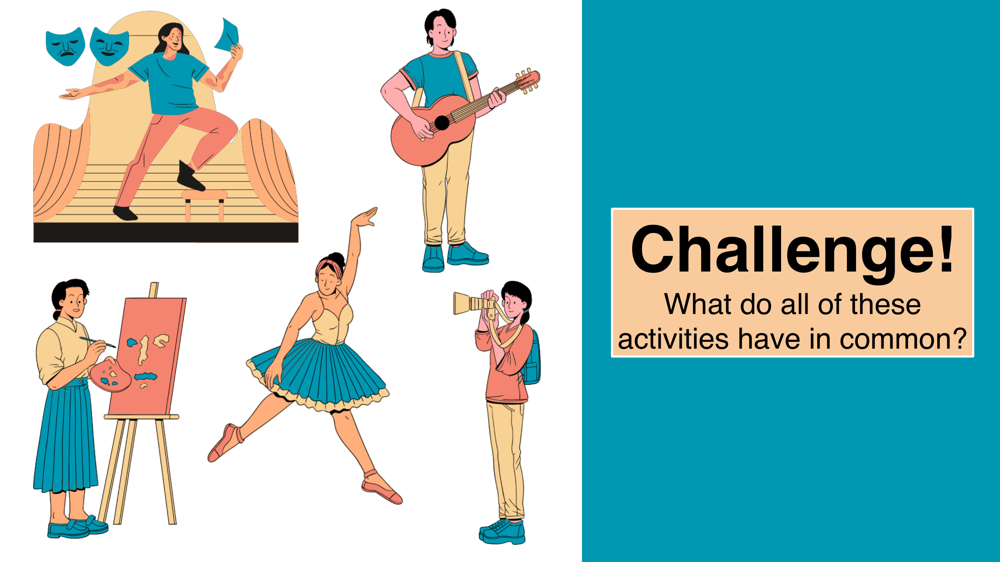
도전(Challenge!)
이 활동들은 모두 어떤 공통점(have in common)이 있는가?
연극·기타 연주·그림 그리기·발레·사진 찍기가 그려져 있는데, 모두 무언가를 표현하고 전달하는 예술(the arts)이자 창작 활동(creative activity)이라는 공통점이 있다. have in common은 '공통으로 가지다'라는 뜻이다.
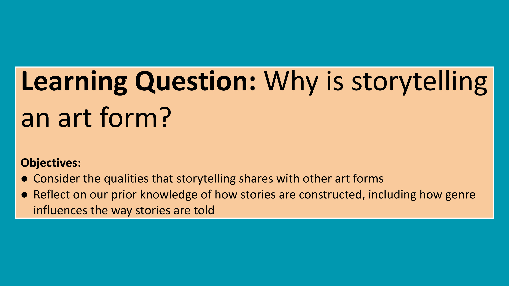
학습 질문(Learning Question): 이야기하기(storytelling)는 왜 하나의 예술 형식(art form)인가?
학습 목표(Objectives):
• 이야기하기가 다른 예술 형식들과 함께 지니는 특질(qualities)을 생각해 본다
• 이야기가 어떻게 구성(constructed)되는지에 대해 우리가 이미 알고 있는 것을 되짚어 본다. 여기에는 장르(genre)가 이야기를 들려주는 방식에 어떤 영향을 주는지도 포함된다
art form(예술 형식)은 그림·음악·춤처럼 사람이 뜻과 감정을 담아 표현하는 갈래를 뜻하고, genre(장르)는 공포·모험·로맨스처럼 이야기의 종류를 가른다. 같은 사건도 장르가 달라지면 말하는 순서·분위기·결말이 달라진다.
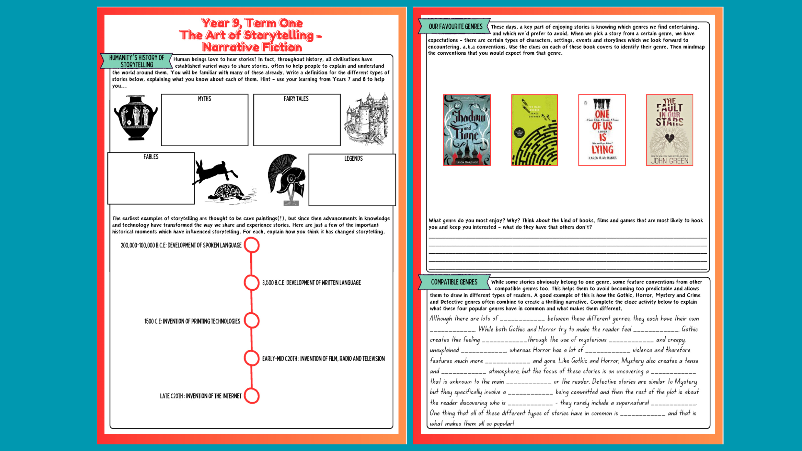
9학년, 1학기
이야기의 기술(The Art of Storytelling) – 서사 소설(Narrative Fiction)
인류의 이야기 역사(HUMANITY'S HISTORY OF STORYTELLING)
인간은 이야기 듣기를 좋아한다! 실제로 역사 내내 모든 문명은 이야기를 나누는 다양한 방식을 만들어 왔으며, 그것은 흔히 사람들이 주변 세계를 설명하고 이해하도록 돕기 위한 것이었다. 여러분은 이미 이들 중 많은 것에 익숙할 것이다. 아래에 있는 여러 종류의 이야기에 대해 각각 아는 것을 설명하며 정의를 써 보아라. 힌트 – 7학년과 8학년 때 배운 것을 활용해 보아라…
신화(MYTHS)
전래동화·요정 이야기(FAIRY TALES)
우화(FABLES)
전설(LEGENDS)
가장 이른 이야기하기의 예는 동굴 벽화(!)로 여겨지지만, 그 이후 지식과 기술의 발전이 우리가 이야기를 나누고 경험하는 방식을 바꾸어 놓았다. 아래는 이야기하기에 영향을 준 중요한 역사적 순간들 중 몇 가지다. 각각에 대해 그것이 이야기하기를 어떻게 바꾸었다고 생각하는지 설명하여라.
기원전(B.C.E) 200,000~100,000년: 음성 언어(spoken language)의 발달
기원전(B.C.E) 3,500년: 문자 언어(written language)의 발달
서기(C.E) 1500년: 인쇄 기술(printing technologies)의 발명
20세기 초~중반: 영화·라디오·텔레비전(film, radio and television)의 발명
20세기 후반: 인터넷(the Internet)의 발명
우리가 좋아하는 장르(OUR FAVOURITE GENRES)
요즘 이야기를 즐기는 데 있어 핵심은 우리가 어떤 장르(genres)를 재미있다고 느끼고 어떤 장르를 피하고 싶은지를 아는 것이다. 우리가 어떤 장르의 이야기를 고를 때 우리에게는 기대(expectations)가 있다 – 우리가 만나기를 기대하는 특정한 유형의 인물, 배경, 사건, 줄거리가 있는데, 이를 다른 말로 관습(conventions)이라고 한다. 아래 각 책 표지의 단서를 이용해 그 장르를 알아내어라. 그런 다음 그 장르에서 기대할 만한 관습들을 마인드맵으로 정리하여라.
[책 표지] Shadow and Bone – Leigh Bardugo
[책 표지] The Maze Runner – James Dashner
[책 표지] One of Us Is Lying – 살인자, 거짓말쟁이, 천재, 공주 – 살인 – 누구를 믿겠는가? – Karen M. McManus – Penguin
[책 표지] The Fault in Our Stars – 뉴욕타임스 베스트셀러 작가의 작품 – John Green
여러분은 어떤 장르를 가장 좋아하는가? 왜 그런가? 여러분을 가장 사로잡고 계속 흥미를 유지시키는 책, 영화, 게임의 종류를 생각해 보아라 – 그것들에는 다른 것에 없는 무엇이 있는가?
어울리는 장르(COMPATIBLE GENRES)
어떤 이야기는 분명히 한 장르에 속하지만, 어떤 이야기는 서로 어울리는 다른 장르의 관습도 함께 담는다. 이는 이야기가 너무 뻔해지는 것을 막아 주고 여러 종류의 독자를 끌어들이게 해 준다. 좋은 예는 고딕(Gothic), 공포(Horror), 미스터리(Mystery), 탐정(Detective) 장르가 자주 결합하여 스릴 있는 서사를 만들어 내는 방식이다. 아래 빈칸 채우기(cloze) 활동을 완성하여 이 네 인기 장르가 어떤 공통점을 가지며 무엇이 서로 다른지 설명하여라.
이 서로 다른 장르들 사이에는 많은 ______이(가) 있지만, 각각은 자기만의 ______을(를) 가지고 있다. 고딕과 공포 둘 다 독자가 ______을(를) 느끼게 하려 하지만, 고딕은 신비로운 ______와(과) 으스스하고 설명되지 않는 ______을(를) 이용해 이 느낌을 만들어 내는 반면, 공포는 ______ 폭력이 많아서 훨씬 더 많은 ______와(과) 유혈 장면을 담는다. 고딕·공포와 마찬가지로 미스터리도 긴장되고 ______한 분위기를 만들지만, 이 이야기들의 초점은 주요 ______나(이나) 독자가 알지 못하는 ______을(를) 밝혀내는 데 있다. 탐정 이야기는 미스터리와 비슷하지만, 특히 ______이(가) 저질러지고 그 뒤 나머지 줄거리가 누가 ______인지를 독자가 알아내는 것에 관한 것이다 – 탐정 이야기에는 초자연적인 ______이(가) 거의 들어가지 않는다. 이 모든 서로 다른 유형의 이야기가 공통으로 가진 한 가지는 ______이며, 바로 그것이 이 이야기들을 모두 그토록 인기 있게 만든다!
장르(genre)는 이야기의 종류를 가리키고, 관습(convention)은 그 장르에서 으레 나오는 인물·배경·사건의 정해진 틀을 말한다. 신화(myth)는 신과 세계의 기원을 설명하는 이야기, 우화(fable)는 동물을 등장시켜 교훈을 주는 짧은 이야기, 전설(legend)은 실제 인물이나 장소에 얽혀 전해지는 이야기다. 빈칸 채우기(cloze)는 문맥에 맞는 낱말을 넣어 문장을 완성하는 활동이다.
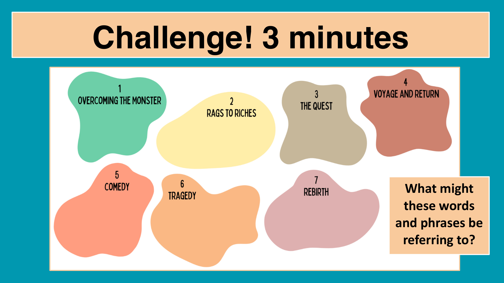
도전! 3분
1 괴물 물리치기(Overcoming the Monster)
2 무일푼에서 부자로(Rags to Riches)
3 탐색·원정(The Quest)
4 떠났다 돌아오기(Voyage and Return)
5 희극(Comedy)
6 비극(Tragedy)
7 재생·거듭남(Rebirth)
이 낱말과 어구들은 무엇을 가리키는 것일까?
일곱 가지 기본 줄거리(the seven basic plots)로, 세상의 이야기가 크게 일곱 가지 틀로 나뉜다고 보는 분류다. rags to riches는 '누더기에서 부자로'라는 뜻의 관용구이고, voyage and return은 낯선 세계로 떠났다가 배운 것을 안고 돌아오는 구조, rebirth는 주인공이 잘못된 상태에서 새사람으로 다시 태어나는 구조를 뜻한다.
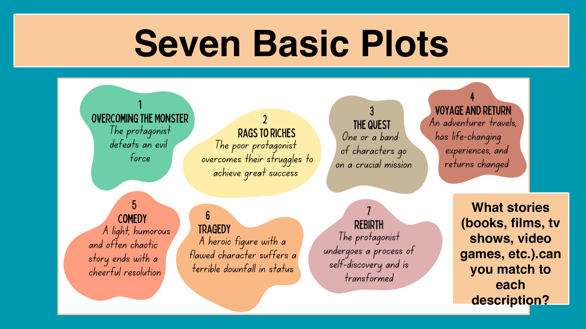
일곱 가지 기본 플롯(Seven Basic Plots)
1 괴물 물리치기(Overcoming the Monster)
주인공(protagonist)이 악한 힘(evil force)을 물리친다
2 가난뱅이에서 부자로(Rags to Riches)
가난한 주인공이 자신의 고난을 이겨내고 큰 성공을 이룬다
3 탐색·원정(The Quest)
한 인물 또는 한 무리의 인물들이 중대한 임무(crucial mission)를 떠난다
4 여정과 귀환(Voyage and Return)
모험가가 여행을 떠나 인생을 바꾸는 경험(life-changing experiences)을 하고 변화된 모습으로 돌아온다
5 희극(Comedy)
가볍고 익살스러우며 종종 뒤죽박죽인 이야기가 유쾌한 결말(cheerful resolution)로 끝난다
6 비극(Tragedy)
결점 있는 성격(flawed character)을 지닌 영웅적 인물이 지위의 끔찍한 몰락(downfall)을 겪는다
7 재생·거듭남(Rebirth)
주인공이 자아 발견(self-discovery)의 과정을 거쳐 변화한다
어떤 이야기(책, 영화, TV 프로그램, 비디오 게임 등)를 각 설명에 짝지을 수 있는가?
영국 작가 크리스토퍼 부커(Christopher Booker)가 제시한 분류로, 세상의 이야기를 일곱 가지 기본 줄거리 틀로 나눈 것이다. protagonist는 이야기의 중심인물인 주인공을 뜻하고, resolution은 갈등이 풀리는 결말 부분을 뜻한다.
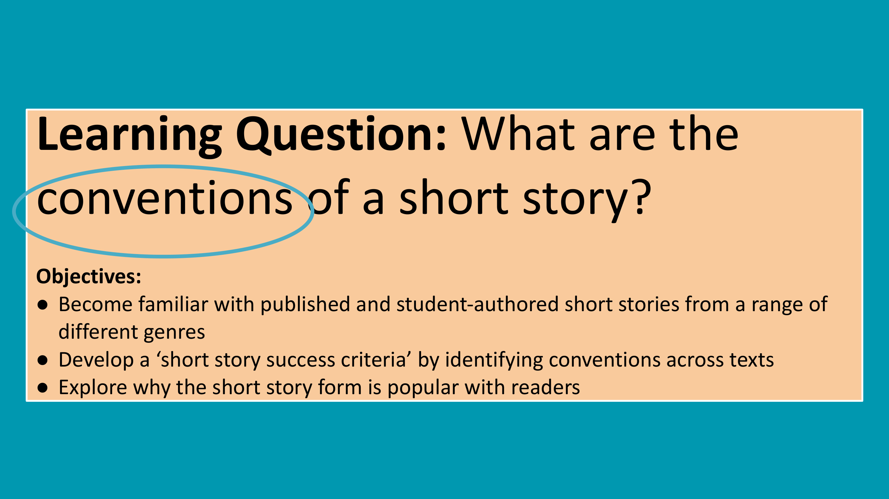
학습 질문(Learning Question): 단편 소설(short story)의 관습·규칙(conventions)은 무엇인가?
학습 목표(Objectives):
• 여러 장르(genres)에 걸친, 출판된 작품과 학생이 쓴 단편 소설들에 익숙해지기
• 여러 글에서 공통된 관습(conventions)을 찾아내어 '단편 소설 성공 기준(short story success criteria)'을 만들기
• 단편 소설이라는 형식(form)이 독자에게 인기 있는 이유를 탐구하기
conventions는 어떤 갈래의 글에서 반복적으로 나타나는 약속된 특징(예: 등장인물 수가 적음, 하나의 사건에 집중, 갑작스러운 결말)을 뜻한다. success criteria는 좋은 글이 갖춰야 할 조건을 항목으로 정리한 점검표다.
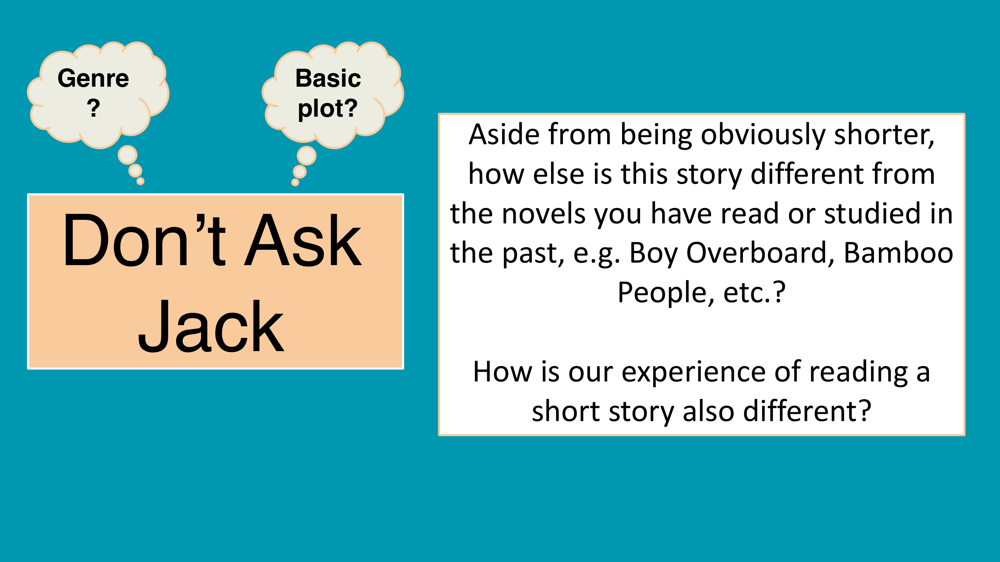
장르(Genre)?
기본 줄거리(Basic plot)?
Don't Ask Jack(잭에게 묻지 마)
분명히 더 짧다는 점 말고, 이 이야기는 여러분이 과거에 읽었거나 공부한 장편소설(novels)—예를 들어 Boy Overboard, Bamboo People 등—과 또 어떻게 다른가?
단편소설(short story)을 읽는 우리의 경험은 또 어떻게 다른가?
단편소설(short story)은 분량이 짧아 등장인물 수와 배경 설명이 적고, 하나의 사건·하나의 인상에 집중하며 결말이 열린 채 끝나는 일이 많다. 장편소설(novel)처럼 인물이 오래 성장하는 과정을 따라가기보다, 짧은 순간의 긴장과 분위기를 느끼는 읽기가 된다.
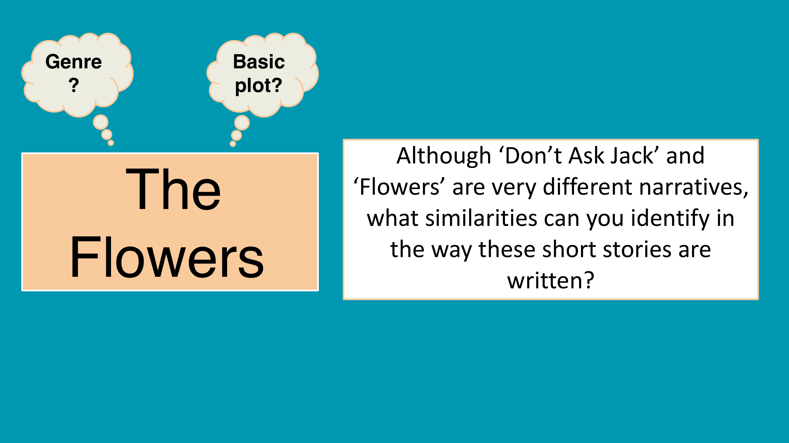
장르(Genre)?
기본 줄거리(Basic plot)?
꽃(The Flowers)
'잭에게 묻지 마(Don't Ask Jack)'와 '꽃(Flowers)'은 매우 다른 서사(narrative)이지만, 이 단편 소설(short stories)들이 쓰인 방식에서 어떤 공통점(similarities)을 찾아낼 수 있는가?
narrative는 이야기를 풀어가는 방식 전체를 가리키는 말이고, plot은 그 안에서 사건이 이어지는 뼈대를 뜻한다. 서로 다른 두 작품을 비교할 때는 소재보다 서술 시점·분위기·결말 처리 같은 '쓰인 방식'에서 공통점을 찾는 것이 핵심이다.
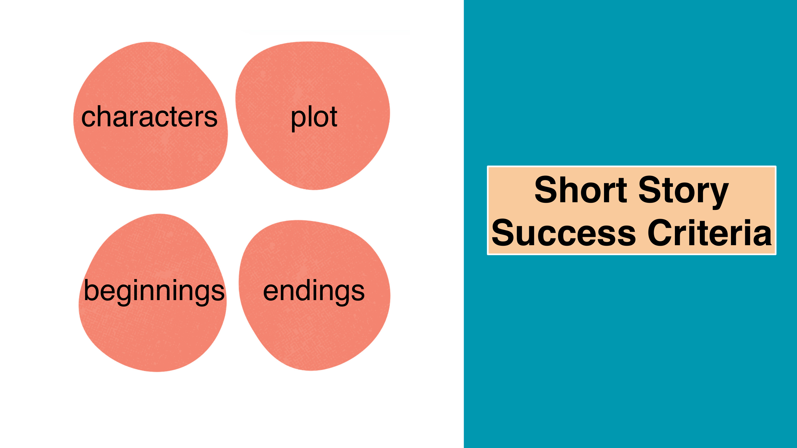
단편소설(Short Story) 성공 기준(Success Criteria)
인물(characters)
줄거리(plot)
도입부(beginnings)
결말(endings)
성공 기준(success criteria)은 글을 잘 썼는지 판단하는 채점 항목이다. 단편소설은 인물·줄거리·도입부·결말 네 가지로 평가한다.
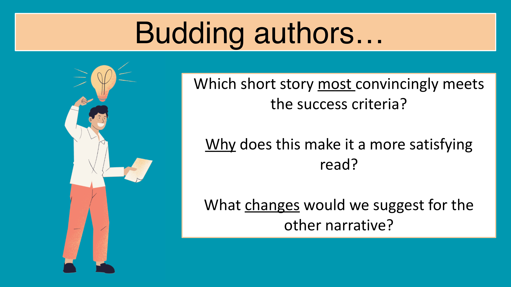
새싹 작가들(Budding authors)…
어느 단편 소설(short story)이 성공 기준(success criteria)을 가장(most) 설득력 있게 충족하는가?
왜(Why) 그 점이 이 글을 더 만족스러운 읽을거리(satisfying read)로 만드는가?
다른 이야기(narrative)에는 어떤 변화(changes)를 제안하겠는가?
success criteria는 글이 갖춰야 할 조건을 미리 정해 둔 평가 항목이고, narrative는 사건이 이어지는 이야기 그 자체를 가리키는 말이다. 이 슬라이드는 친구의 글을 서로 평가하며 근거를 대고(why) 고칠 점(changes)을 제안하는 활동이다.
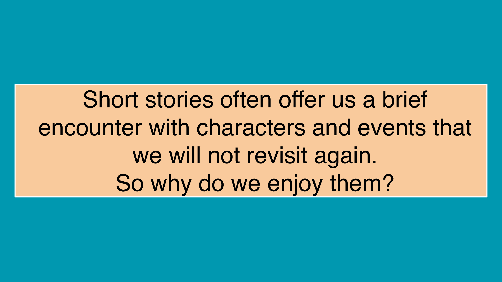
단편 소설(short stories)은 흔히 우리에게 등장인물(characters)과 사건(events)을 잠깐 스쳐 만나게 해 주고, 우리는 그것들을 다시 찾아가 보지 않는다.
그런데도 우리는 왜 단편 소설을 즐기는가?
a brief encounter는 '짧은 만남', revisit은 '다시 찾아가다'라는 뜻이다. 장편 소설과 달리 단편은 인물과 사건을 오래 따라가지 않고 한 번만 보여 주는데, 그 짧음 자체가 주는 재미를 묻는 질문이다.
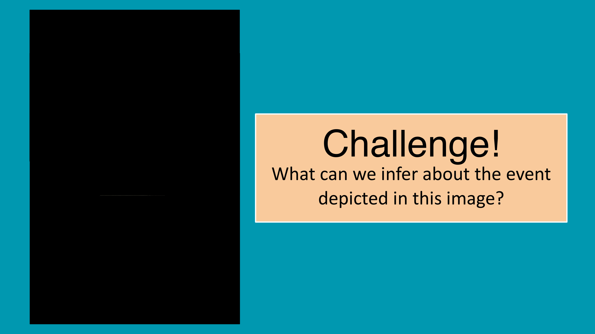
도전 과제(Challenge!)
이 이미지에 묘사된 사건(event)에 대해 우리는 무엇을 추론(infer)할 수 있는가?
추론(infer)이란 그림이나 글에 직접 쓰여 있지 않은 것을 단서와 배경지식으로 미루어 알아내는 것이다. 이미지를 볼 때는 인물의 표정·자세, 배경, 소품 같은 세부 단서(details)를 근거로 삼아 어떤 일이 벌어지고 있는지 설명해야 한다.
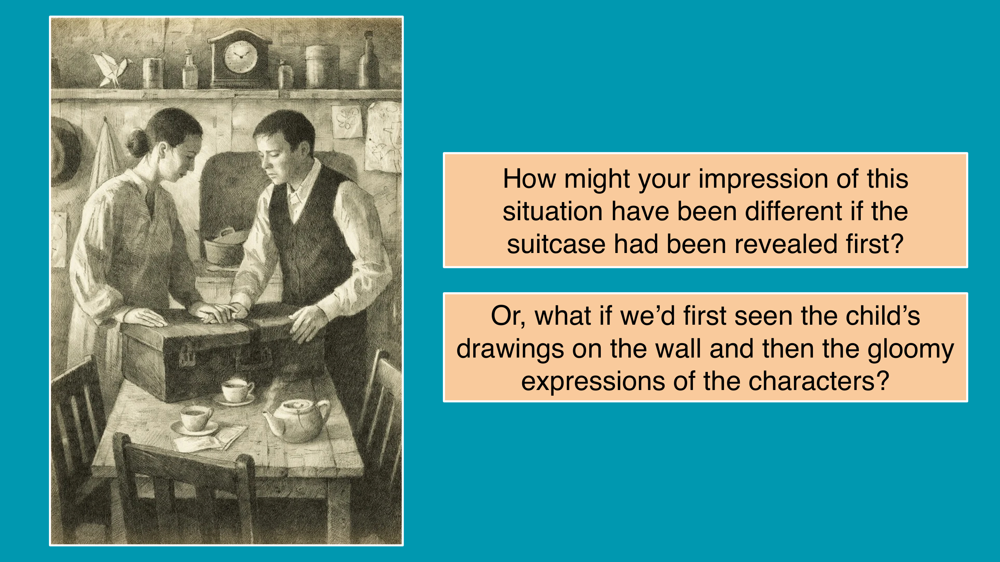
이 상황에 대한 여러분의 인상(impression)은 만약 여행가방(suitcase)이 먼저 드러났다면(revealed first) 어떻게 달라졌을까?
또는, 우리가 벽에 걸린 아이의 그림(the child's drawings)을 먼저 보고 그다음에 인물들의 우울한 표정(gloomy expressions)을 보았다면 어땠을까?
이야기에서 정보를 보여 주는 순서(order of reveal)가 독자의 해석을 바꾼다는 점을 묻는 물음이다. 같은 장면이라도 가방을 먼저 보면 '떠남·이별'로, 아이 그림을 먼저 보면 '아이를 잃음'으로 읽히는 식으로 인상이 달라진다.
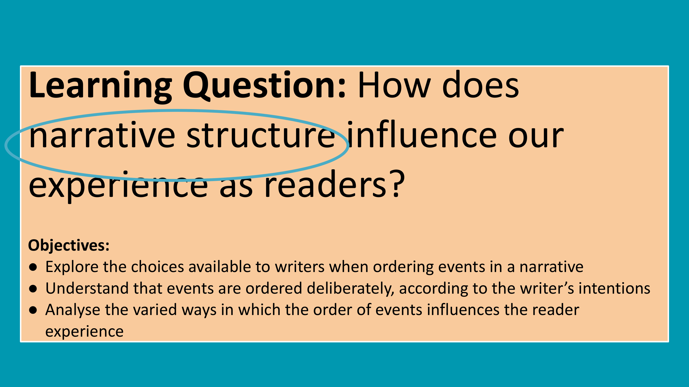
학습 질문(Learning Question): 서사 구조(narrative structure)가 독자로서 우리의 경험에 어떤 영향을 미치는가?
목표(Objectives):
● 작가가 서사(narrative) 속 사건의 순서를 정할 때(ordering events) 쓸 수 있는 선택지를 탐구한다
● 사건은 작가의 의도(writer's intentions)에 따라 의도적으로(deliberately) 배열된다는 것을 이해한다
● 사건의 순서(order of events)가 독자의 경험에 영향을 주는 다양한 방식을 분석한다(Analyse)
서사 구조(narrative structure)는 이야기의 사건을 어떤 순서로 늘어놓느냐를 말한다. 시간 순서대로 가는 방식(chronological)뿐 아니라, 과거로 돌아가는 회상(flashback), 앞일을 미리 암시하는 복선(foreshadowing), 사건 한가운데서 시작하는 방식(in medias res) 등이 있고, 이 선택에 따라 독자가 느끼는 긴장감과 몰입이 달라진다.
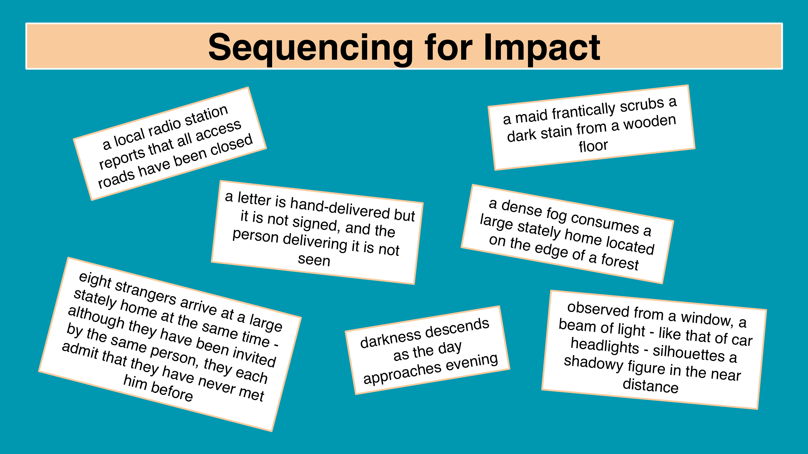
충격을 위한 배열(Sequencing for Impact)
어느 지역 라디오 방송국이 모든 진입 도로가 폐쇄되었다고 보도한다
한 하녀가 나무 바닥에서 검은 얼룩을 미친 듯이 문질러 닦고 있다
편지 한 통이 직접 전달되지만 서명이 없고, 그것을 전달한 사람도 목격되지 않는다
짙은 안개(dense fog)가 숲 가장자리에 자리한 크고 웅장한 저택을 집어삼킨다
여덟 명의 낯선 사람들이 그 크고 웅장한 저택에 동시에 도착한다 — 같은 사람에게 초대를 받았는데도, 그들은 저마다 그를 전에 만난 적이 없다고 털어놓는다
날이 저녁으로 향하면서 어둠이 내려앉는다
창문에서 바라보니, 자동차 헤드라이트 같은 한 줄기 빛이 가까운 거리에 있는 어두운 형체(shadowy figure)를 실루엣으로 드러낸다
배열(sequencing)은 같은 사건들을 어떤 순서로 놓느냐에 따라 긴장감과 충격이 달라진다는 이야기 기법이다. 여기 흩어진 일곱 개의 사건 카드를 학생이 직접 순서대로 늘어놓으며 서스펜스(suspense)를 만드는 연습을 하는 활동이다.
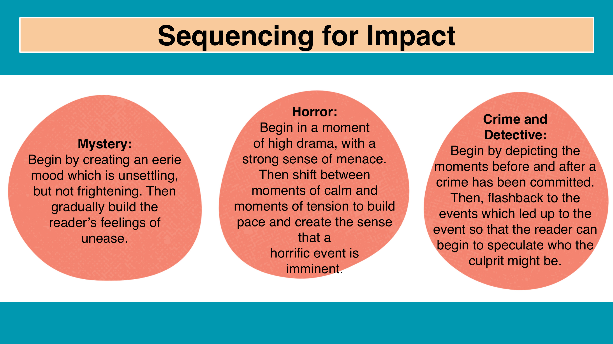
충격을 주는 순서 배치(Sequencing for Impact)
미스터리(Mystery):
무섭지는 않지만 불안하게 만드는 으스스한 분위기(eerie mood)를 만드는 것으로 시작한다. 그런 다음 독자의 불안한 느낌(unease)을 차츰차츰 쌓아 올린다.
공포(Horror):
위협감(menace)이 강하게 느껴지는, 극도로 긴박한 순간에서 시작한다. 그런 다음 고요한 순간과 긴장된 순간 사이를 오가며 속도감(pace)을 만들고, 끔찍한 사건이 곧 닥칠 것 같은(imminent) 느낌을 만들어 낸다.
범죄·탐정(Crime and Detective):
범죄가 저질러지기 직전과 직후의 순간을 묘사하는 것으로 시작한다. 그런 다음 그 사건으로 이어진 일들로 회상(flashback)해, 독자가 범인(culprit)이 누구일지 추측(speculate)하기 시작할 수 있게 한다.
세 장르 모두 '사건이 일어난 순서'가 아니라 '독자가 가장 크게 반응할 순서'로 배열한다는 점이 핵심이다. eerie는 으스스한, menace는 곧 해를 입힐 것 같은 위협, imminent는 임박한, culprit은 죄를 저지른 범인을 뜻한다.
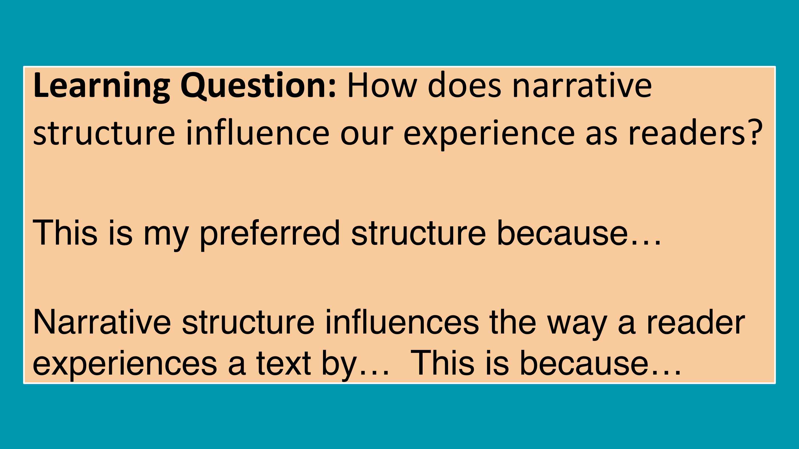
학습 질문(Learning Question): 서사 구조(narrative structure)는 독자로서 우리의 경험에 어떻게 영향을 주는가?
내가 선호하는 구조는 이것이다, 왜냐하면…
서사 구조(narrative structure)는 독자가 텍스트를 경험하는 방식에 …함으로써 영향을 준다. 그 이유는…
서사 구조(narrative structure)는 이야기를 어떤 순서·틀로 배열하느냐를 뜻한다. 예를 들어 시간 순서대로 가는 직선 구조(linear), 과거로 돌아가는 회상(flashback), 결말부터 보여주는 역순 구조 등이 있고, 배열 방식에 따라 독자가 느끼는 긴장감(suspense)과 정보량이 달라진다. 아래 두 문장은 답을 쓸 때 쓰는 문장 시작 틀(sentence starter)이므로, 빈칸 뒤를 자기 근거로 채워 영어로 답하면 된다.
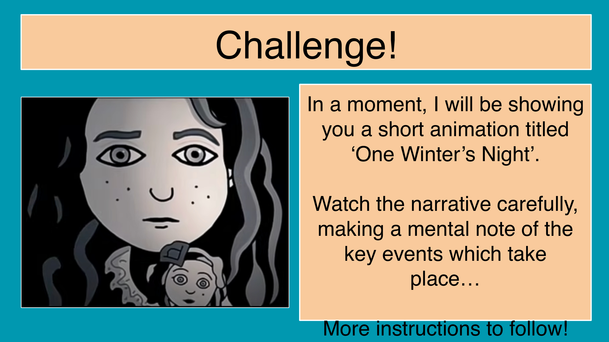
도전 과제(Challenge)!
잠시 후, 나는 여러분에게 ‘어느 겨울밤(One Winter's Night)’이라는 제목의 짧은 애니메이션(animation)을 보여 줄 것이다.
그 서사(narrative)를 주의 깊게 보면서, 일어나는 핵심 사건(key events)들을 머릿속에 기억해 두어라…
지시 사항은 뒤에 더 이어진다!(More instructions to follow!)
서사(narrative)는 사건이 시간 순서로 이어지는 이야기의 흐름을 뜻하고, 핵심 사건(key events)은 그 흐름을 이루는 중요한 장면들을 가리킨다. 이야기의 기술 수업에서는 대사 없는 애니메이션을 보고 사건 순서를 정리해 보는 활동이 자주 쓰인다.
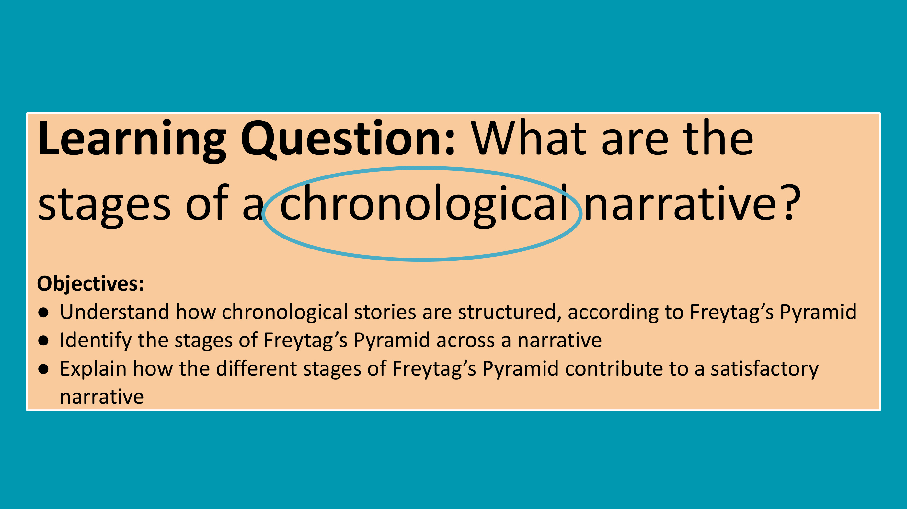
학습 질문(Learning Question): 시간 순서 서사(chronological narrative)의 단계(stages)는 무엇인가?
학습 목표(Objectives):
● 시간 순서대로 진행되는 이야기가 프라이타크의 피라미드(Freytag's Pyramid)에 따라 어떻게 구성되는지 이해한다
● 하나의 서사 전체에서 프라이타크의 피라미드(Freytag's Pyramid) 단계들을 찾아낸다
● 프라이타크의 피라미드(Freytag's Pyramid)의 여러 단계가 만족스러운 서사(satisfactory narrative)에 어떻게 기여하는지 설명한다
시간 순서 서사(chronological narrative)는 사건을 일어난 시간 순서대로 늘어놓는 이야기 방식이다. 프라이타크의 피라미드(Freytag's Pyramid)는 이야기를 발단(exposition)·상승(rising action)·절정(climax)·하강(falling action)·결말(resolution/denouement) 다섯 단계로 나눈 구조 모형이다.
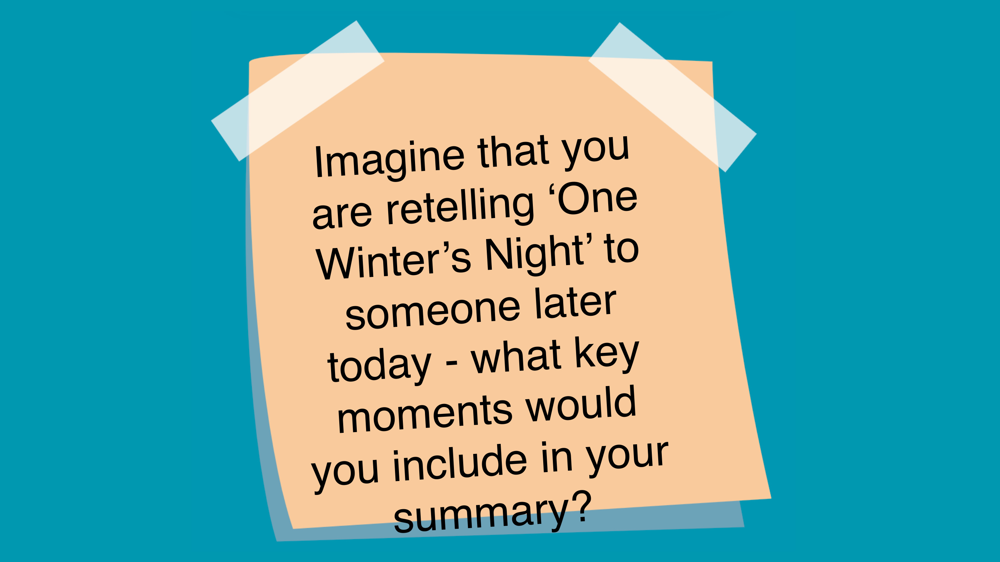
오늘 늦게 누군가에게 '어느 겨울밤(One Winter's Night)'을 다시 이야기해 준다고 상상해 보라 — 요약(summary)에 어떤 핵심 장면(key moments)을 넣겠는가?
다시 말하기(retelling)는 이야기를 처음부터 끝까지 그대로 옮기는 것이 아니라, 줄거리를 이해하는 데 꼭 필요한 사건만 골라 짧게 전하는 것이다. 핵심 장면(key moment)이란 빼면 이야기가 말이 안 되는 사건을 뜻하며, 이런 사건만 추려 정리한 것이 요약(summary)이다.
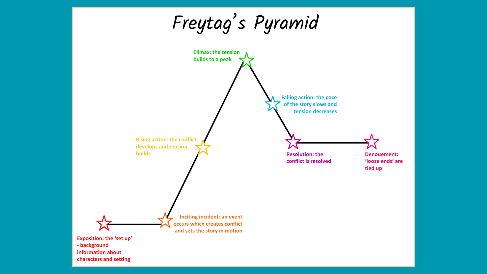
프라이타크의 피라미드(Freytag's Pyramid)
절정(Climax): 긴장이 최고조로 쌓인다
하강 행동(Falling action): 이야기의 속도가 느려지고 긴장이 줄어든다
상승 행동(Rising action): 갈등이 전개되고 긴장이 쌓인다
해결(Resolution): 갈등이 해결된다
대단원(Denouement): '남은 실마리(loose ends)'가 정리된다
발단 사건(Inciting incident): 갈등을 만들어 이야기를 움직이게 하는 사건이 일어난다
발단·설명(Exposition): '판 깔기(set up)' - 인물과 배경에 대한 배경 정보
프라이타크의 피라미드는 이야기 구조를 다섯~여섯 단계로 나눈 그림이다. 왼쪽 아래 평평한 부분이 설명(exposition), 오르막이 상승 행동, 꼭대기가 절정, 내리막이 하강 행동, 오른쪽 평평한 부분이 해결과 대단원이다. loose ends는 아직 매듭짓지 않은 이야기 가닥을 뜻한다.
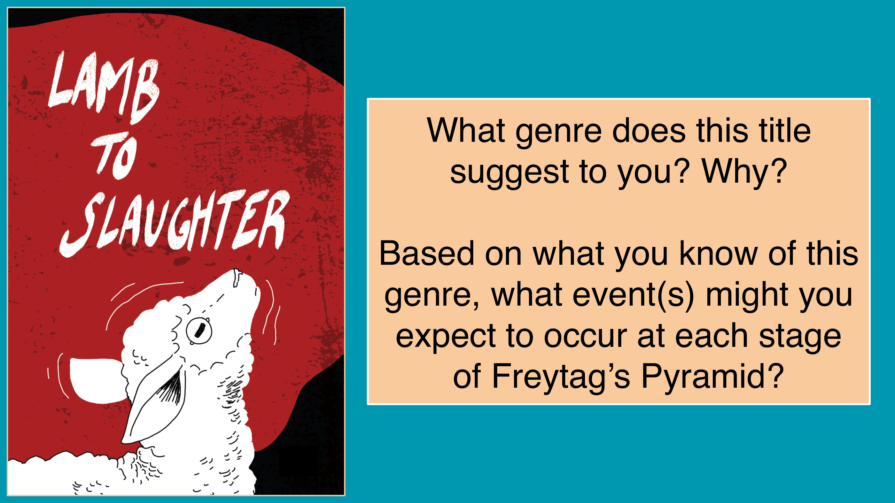
어린 양을 도살장으로(Lamb to the Slaughter)
이 제목은 너희에게 어떤 장르(genre)를 떠올리게 하는가? 왜 그런가?
이 장르에 대해 아는 바를 바탕으로, 프라이타크의 피라미드(Freytag's Pyramid)의 각 단계에서 어떤 사건이 일어날 것이라 예상하는가?
'Lamb to the Slaughter'는 로알드 달(Roald Dahl)의 단편으로, 제목은 '순순히 죽음으로 끌려가는 희생양'을 뜻하는 관용구다. 프라이타크의 피라미드는 이야기를 발단(exposition)·상승(rising action)·절정(climax)·하강(falling action)·결말(resolution/denouement) 다섯 단계로 나눈 구조 모형이다.
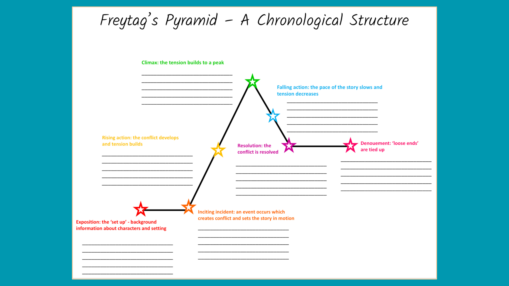
프라이타크의 피라미드(Freytag's Pyramid) — 시간 순서 구조(A Chronological Structure)
절정(Climax): 긴장이 최고조로 쌓인다
(빈 줄 5칸)
하강 행동(Falling action): 이야기의 속도가 느려지고 긴장이 줄어든다
(빈 줄 5칸)
상승 행동(Rising action): 갈등이 전개되고 긴장이 쌓인다
(빈 줄 5칸)
해결(Resolution): 갈등이 해결된다
(빈 줄 5칸)
결말·마무리(Denouement): '남은 실마리(loose ends)'가 매듭지어진다
(빈 줄 5칸)
발단·설명(Exposition): '판 깔기(the set up)' - 등장인물과 배경에 대한 사전 정보
(빈 줄 5칸)
발단 사건(Inciting incident): 갈등을 만들어내고 이야기를 움직이게 하는 사건이 일어난다
(빈 줄 5칸)
프라이타크의 피라미드는 이야기를 시간 순서대로 발단(exposition) → 발단 사건(inciting incident) → 상승 행동(rising action) → 절정(climax) → 하강 행동(falling action) → 해결(resolution) → 결말(denouement) 일곱 단계로 나눈 구조다. 그림의 별은 왼쪽 아래에서 시작해 꼭대기(절정)를 찍고 오른쪽 아래로 내려오는 순서이며, 각 단계 아래 빈 줄은 자기 이야기의 해당 단계를 적어 넣는 칸이다.
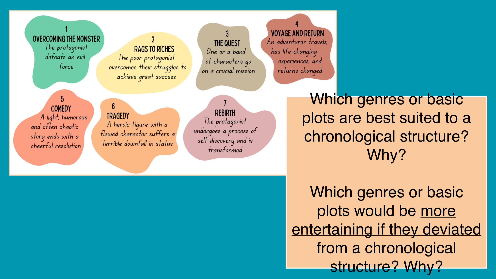
1 괴물 물리치기(Overcoming the Monster)
주인공(protagonist)이 사악한 힘(evil force)을 물리친다
2 무일푼에서 부자로(Rags to Riches)
가난한 주인공이 자신의 고난(struggles)을 이겨내고 큰 성공을 이룬다
3 탐색·모험(The Quest)
한 사람 또는 한 무리의 인물들이 아주 중요한 임무(crucial mission)를 떠난다
4 떠났다 돌아오기(Voyage and Return)
모험가가 여행을 떠나 인생을 바꾸는 경험(life-changing experiences)을 하고, 달라져서 돌아온다
5 희극(Comedy)
가볍고 익살스럽고 종종 뒤죽박죽인(chaotic) 이야기가 유쾌한 결말(cheerful resolution)로 끝난다
6 비극(Tragedy)
결함 있는 성격(flawed character)을 지닌 영웅적 인물이 지위(status)에서 끔찍하게 몰락(downfall)한다
7 재생·거듭남(Rebirth)
주인공이 자기 발견(self-discovery)의 과정을 거쳐 변화한다(transformed)
어떤 장르(genres)나 기본 플롯(basic plots)이 시간 순서 구조(chronological structure)에 가장 잘 맞는가? 왜 그런가?
어떤 장르나 기본 플롯이 시간 순서 구조에서 벗어났을 때(deviated) 더 재미있어질까? 왜 그런가?
크리스토퍼 부커가 정리한 일곱 가지 기본 플롯(seven basic plots)으로, 세상 이야기 대부분이 이 일곱 틀 중 하나에 들어간다는 주장이다. 시간 순서 구조(chronological structure)는 사건을 일어난 순서대로 늘어놓는 방식이고, 여기서 벗어나는 대표적 장치가 회상(flashback)과 복선 뛰어넘기(flash-forward), 결말부터 시작하기(in medias res)다.
제5과(Lesson 5)
이 장은 다섯 번째 수업의 시작을 알리는 표지 화면이다.
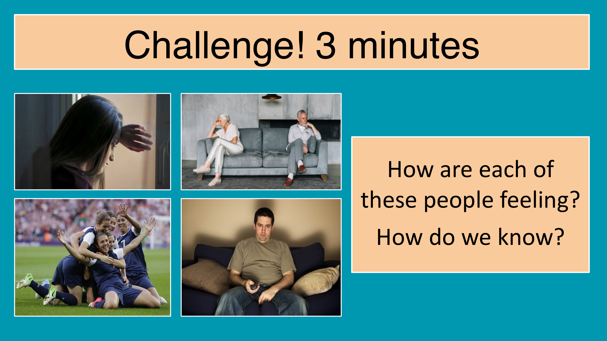
도전!(Challenge!) 3분(3 minutes)
이 사람들은 각각 어떤 기분(feeling)일까?
우리는 그것을 어떻게 알 수 있을까?
사진 속 인물의 표정·자세·몸짓 같은 몸짓언어(body language)를 근거로 감정을 짐작하는 활동이다. 이야기를 쓸 때 '슬프다'라고 말하는 대신 행동으로 감정을 드러내는 보여주기, 말하지 않기(show, don't tell) 기법과 이어진다.
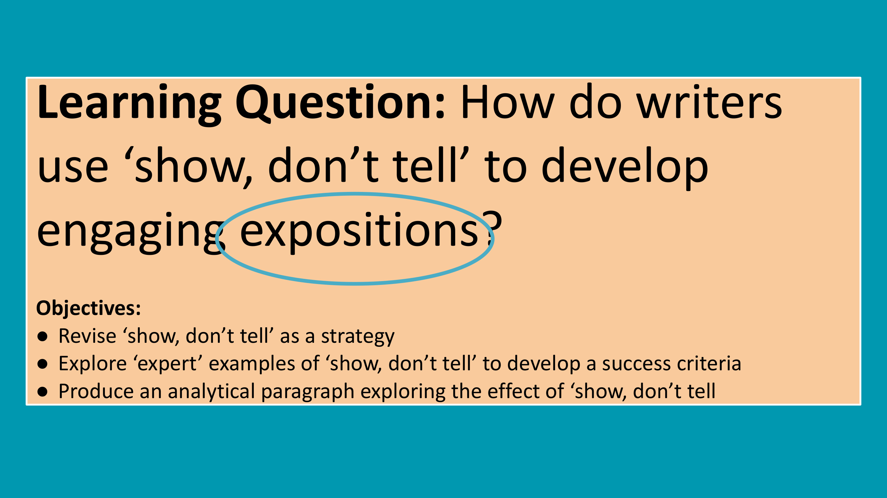
학습 질문(Learning Question): 작가들은 어떻게 '말하지 말고 보여줘라'(show, don't tell)를 써서 흥미를 끄는 발단(engaging expositions)을 만들어 내는가?
목표(Objectives):
● 하나의 전략(strategy)으로서 '말하지 말고 보여줘라(show, don't tell)'를 복습한다
● '말하지 말고 보여줘라(show, don't tell)'의 '전문가(expert)' 예시를 살펴보고 성공 기준(success criteria)을 만든다
● '말하지 말고 보여줘라(show, don't tell)'의 효과를 탐구하는 분석 문단(analytical paragraph)을 쓴다
exposition(발단)은 이야기 첫머리에서 인물·배경·상황을 알려 주는 부분이다. show, don't tell은 '그는 화가 났다'처럼 직접 말해 버리는 대신 행동·감각 묘사로 독자가 스스로 느끼게 하는 서술 기법이다.
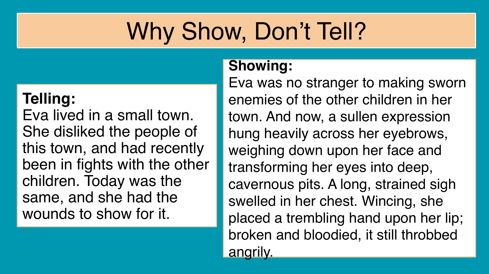
왜 보여주고, 말하지 말아야 하는가?(Why Show, Don't Tell?)
말하기(Telling):
에바(Eva)는 작은 마을에 살았다. 그녀는 이 마을 사람들을 싫어했고, 최근에 다른 아이들과 싸운 적이 있었다. 오늘도 마찬가지였고, 그녀에게는 그것을 증명하는 상처가 있었다.
보여주기(Showing):
에바(Eva)는 마을의 다른 아이들과 철천지 원수가 되는 일이 낯설지 않았다. 그리고 지금, 시무룩한 표정(sullen expression)이 그녀의 눈썹을 가로질러 무겁게 걸려, 얼굴을 짓누르고 두 눈을 깊고 동굴 같은 구덩이(cavernous pits)로 바꿔 놓았다. 길고 힘겨운 한숨이 그녀의 가슴속에서 부풀어 올랐다. 얼굴을 찡그리며(wincing), 그녀는 떨리는 손을 입술에 갖다 댔다. 터지고 피가 난 그 입술은 여전히 성난 듯 욱신거렸다(throbbed angrily).
'말하기(telling)'는 인물의 상태를 작가가 요약해 알려주는 방식이고, '보여주기(showing)'는 표정·행동·감각 묘사로 독자가 스스로 느끼게 하는 방식이다. 두 글은 같은 내용이지만, 보여주기 쪽은 disliked·fights 같은 설명 대신 sullen expression, cavernous pits, trembling hand 같은 구체적 묘사를 써서 감정을 전달한다.
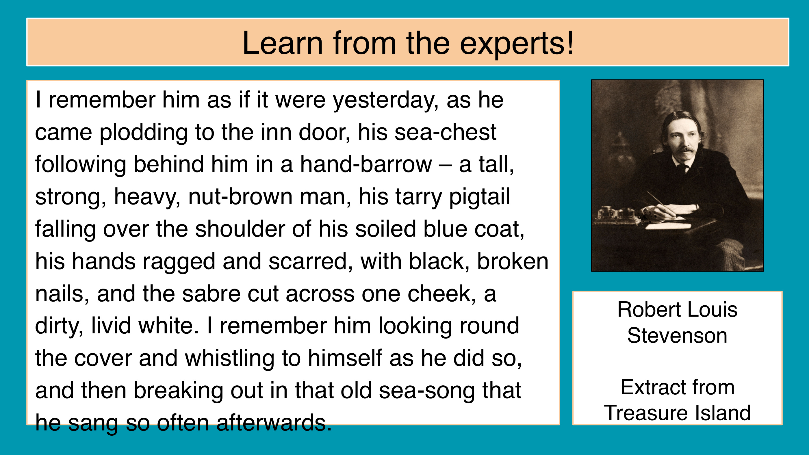
전문가에게서 배우자!(Learn from the experts!)
나는 그를 마치 어제 일처럼 기억한다. 그가 터덜터덜 걸어(plodding) 여관 문으로 다가오고, 그의 뱃사람 궤짝(sea-chest)이 손수레(hand-barrow)에 실려 뒤를 따라오던 모습을 — 키 크고 힘세고 육중한, 호두빛 갈색 피부의 남자, 기름칠한 땋은 머리(tarry pigtail)가 더러워진 파란 외투 어깨 위로 늘어져 있었고, 두 손은 거칠고 흉터가 나 있었으며 손톱은 검고 부러져 있었다. 그리고 한쪽 뺨을 가로지른 군도(軍刀)에 베인 상처(sabre cut)는 지저분하고 시퍼렇게 질린 흰빛(livid white)이었다. 나는 그가 주위를 둘러보며 혼자 휘파람을 불던 것, 그러고는 그 뒤로도 자주 부르곤 했던 그 옛 뱃노래(sea-song)를 불쑥 부르기 시작하던 것을 기억한다.
로버트 루이스 스티븐슨(Robert Louis Stevenson)
『보물섬』(Treasure Island)에서 발췌
인물 묘사(character description)의 본보기로, 겉모습의 구체적인 세부(옷·손·흉터·머리 모양)를 쌓아 인물의 과거와 성격까지 짐작하게 만드는 기법이다. plodding(터덜터덜 걷다), tarry(타르가 묻은·끈적한), livid(검푸른·핏기 없는)처럼 감각을 자극하는 낱말 선택이 핵심이다.
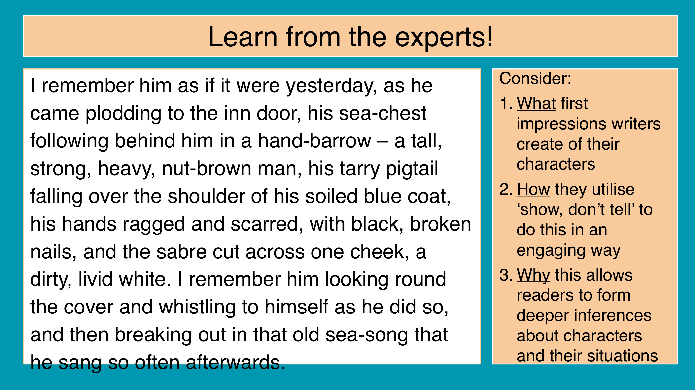
전문가에게서 배우자!
나는 마치 어제 일처럼 그를 기억한다. 그가 터벅터벅 여관 문으로 다가오던 모습을, 그의 뱃사람 궤짝(sea-chest)이 손수레에 실려 그의 뒤를 따라오던 모습을 — 키가 크고 힘세고 육중한, 호두빛 갈색 피부의 사내, 더러워진 파란 외투 어깨 위로 흘러내린 타르 먹인 땋은 머리(tarry pigtail), 거칠고 흉터진 두 손과 검게 부러진 손톱들, 그리고 한쪽 뺨을 가로지른 군도에 베인 상처(sabre cut), 그 더럽고 시퍼렇게 질린 흰 자국. 나는 그가 그러면서 휘파람을 불며 만(灣)을 둘러보던 모습을, 그러고는 그 뒤로도 자주 부르던 그 옛 뱃노래(sea-song)를 불쑥 터뜨리던 모습을 기억한다.
생각해 볼 것(Consider):
1. 작가들이 자기 인물(characters)에 대해 만들어 내는 첫인상(first impressions)이 무엇(What)인지
2. 그것을 흥미롭게 해내기 위해 작가들이 '말하지 말고 보여줘라(show, don't tell)'를 어떻게(How) 활용하는지
3. 이것이 왜(Why) 독자로 하여금 인물과 그 상황에 대해 더 깊은 추론(inferences)을 하게 해 주는지
이 글은 로버트 루이스 스티븐슨의 『보물섬』 첫머리로, 인물을 '거칠다'고 직접 설명하지 않고 흉터·부러진 손톱·더러운 외투 같은 구체적 모습만 보여 주는 show, don't tell의 본보기다. inference(추론)는 글에 직접 적히지 않은 것을 단서로 미루어 짐작하는 읽기 방식을 뜻한다.
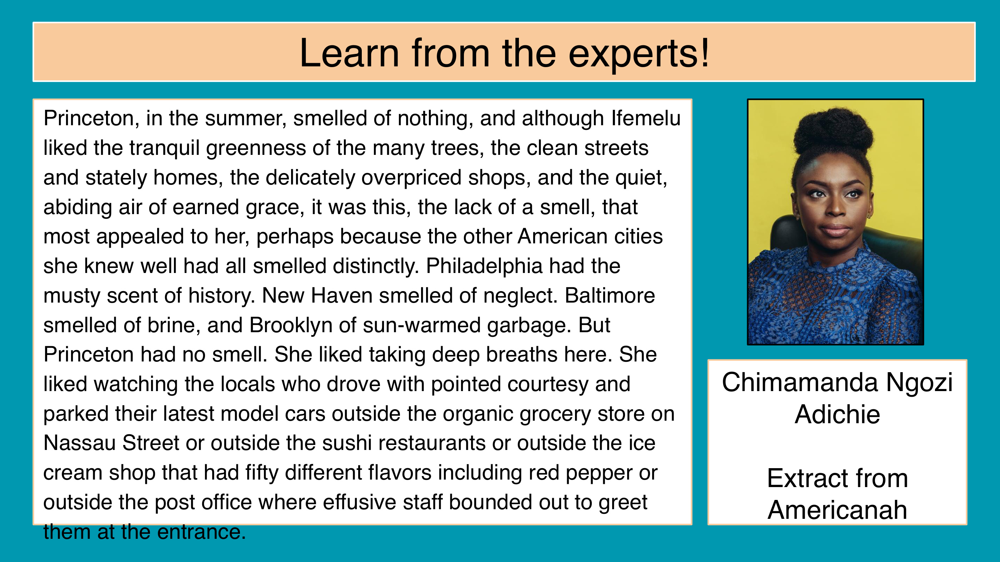
전문가에게서 배우자!
프린스턴은 여름에 아무 냄새도 나지 않았고, 이페멜루(Ifemelu)는 수많은 나무의 고요한 푸르름, 깨끗한 거리와 위풍당당한 집들, 은근히 값비싼 가게들, 그리고 애써 얻어낸 품위가 조용히 감도는 공기를 좋아했지만, 그녀의 마음을 가장 끈 것은 바로 이것, 즉 냄새가 없다는 것이었다. 아마도 그녀가 잘 아는 다른 미국 도시들은 모두 저마다 뚜렷한 냄새가 났기 때문일 것이다. 필라델피아(Philadelphia)에서는 곰팡내 나는 역사의 향이 났다. 뉴헤이븐(New Haven)에서는 방치된 냄새가 났다. 볼티모어(Baltimore)에서는 바닷물의 짠내가 났고, 브루클린(Brooklyn)에서는 햇볕에 데워진 쓰레기 냄새가 났다. 그러나 프린스턴에는 아무 냄새도 없었다. 그녀는 이곳에서 깊이 숨 쉬는 것을 좋아했다. 그녀는 조심스러운 예의를 갖춰 운전하는 이곳 사람들이 나소 스트리트(Nassau Street)의 유기농 식료품점 앞이나 초밥집 앞, 혹은 붉은 고추 맛을 포함해 쉰 가지 맛을 갖춘 아이스크림 가게 앞, 아니면 살가운 직원들이 입구까지 뛰쳐나와 맞아 주는 우체국 앞에 최신형 자동차를 대는 모습을 지켜보는 것을 좋아했다.
치마만다 응고지 아디치에(Chimamanda Ngozi Adichie)
《아메리카나(Americanah)》에서 발췌(Extract from Americanah)
이 글은 감각 묘사(sensory description), 그중에서도 후각(smell)만으로 장소의 성격을 그리는 기법을 보여 준다. 각 도시에 냄새를 하나씩 붙여 대조한 뒤 '냄새 없음'을 프린스턴의 특징으로 삼는 방식은 병렬 구조(parallel structure)와 대조(contrast)를 함께 쓴 예다. tranquil(고요한), stately(위풍당당한), abiding(지속되는), effusive(넘치도록 다정한) 같은 낱말이 배경의 분위기(tone)를 만든다.
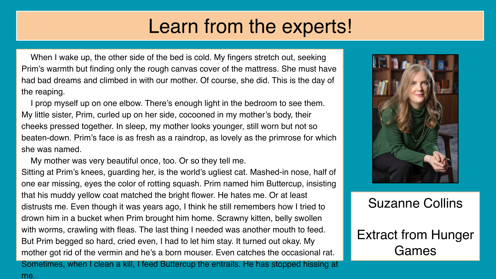
전문가에게서 배우자! (Learn from the experts!)
잠에서 깨어 보니 침대 반대편이 차갑다. 손가락을 뻗어 프림의 온기를 더듬지만 잡히는 건 매트리스의 거친 캔버스 덮개뿐이다. 나쁜 꿈을 꾸고 엄마 품으로 기어들어 갔겠지. 당연히 그랬을 것이다. 오늘은 추첨(the reaping)의 날이니까.
나는 한쪽 팔꿈치로 몸을 일으킨다. 침실에는 두 사람을 볼 수 있을 만큼 빛이 들어온다. 내 여동생 프림은 옆으로 누워 엄마의 몸에 고치처럼 감싸인 채(cocooned), 서로 뺨을 맞대고 있다. 잠든 엄마는 더 젊어 보인다. 여전히 지쳐 보이지만 그렇게까지 기가 꺾여 보이지는(beaten-down) 않는다. 프림의 얼굴은 빗방울처럼 싱그럽고, 그 아이의 이름이 된 앵초(primrose)처럼 사랑스럽다.
우리 엄마도 한때는 무척 아름다웠다. 적어도 사람들은 그렇게 말한다.
프림의 무릎께에 앉아 그 아이를 지키고 있는 건 세상에서 제일 못생긴 고양이다. 짓눌린 코, 한쪽 귀는 반이 떨어져 나갔고, 눈은 썩은 호박(squash) 빛이다. 프림은 그 진흙 같은 노란 털이 밝은 꽃과 닮았다며 버터컵(Buttercup, 미나리아재비)이라는 이름을 붙였다. 그 고양이는 나를 싫어한다. 아니면 적어도 나를 믿지 않는다(distrusts). 몇 해나 지난 일인데도, 프림이 그를 집에 데려왔을 때 내가 양동이에 빠뜨려 죽이려 했던 일을 아직 기억하는 것 같다. 배는 기생충으로 부풀고 벼룩이 들끓던 비쩍 마른 새끼고양이였다. 먹여야 할 입이 하나 더 느는 건 내가 가장 원하지 않던 일이었다. 하지만 프림이 하도 애원하고 울기까지 해서, 나는 그를 남겨 둘 수밖에 없었다. 결과는 괜찮았다. 엄마가 해충(vermin)을 없애 주었고, 그는 타고난 쥐잡이(mouser)가 되었다. 가끔은 쥐(rat)까지 잡는다. 나는 사냥한 짐승을 손질할 때면 버터컵에게 내장(entrails)을 던져 준다. 그는 이제 나를 보고 쉭쉭거리는(hissing) 것을 그만두었다.
수잔 콜린스(Suzanne Collins)
『헝거 게임』 발췌(Extract from Hunger Games)
작가가 인물을 소개할 때 설명 대신 '감각과 행동'으로 보여 주는(show, don't tell) 기법을 보여 주는 예문이다. 차가운 침대 반대편, 거친 캔버스 천, 썩은 호박 빛 눈처럼 만지고 보는 감각적 세부(sensory detail)로 가난한 처지와 인물의 성격을 드러내고, '빗방울처럼 싱그럽다'는 직유(simile)로 프림의 순수함을 대비시킨다. reaping(추첨·수확)은 작품 속에서 아이들을 경기에 뽑아 가는 행사를 뜻하며, primrose(앵초)는 동생 이름 Prim의 어원이라 이름 자체가 인물 묘사가 된다.
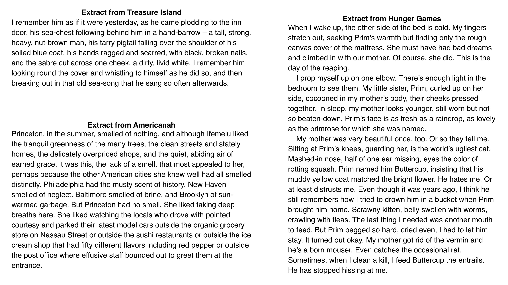
보물섬(Treasure Island) 발췌
나는 그를 어제 일처럼 기억한다. 그가 터벅터벅 여관 문으로 걸어 들어오던 모습을, 그의 뱃사람 궤짝(sea-chest)이 손수레에 실려 뒤따라오던 모습을 — 키 크고 힘세고 육중한, 호두빛으로 그을린 남자였다. 타르 먹인 변발(pigtail)이 때 묻은 푸른 외투 어깨 위로 늘어져 있었고, 두 손은 거칠게 터지고 흉터투성이에 손톱은 검고 부러져 있었으며, 한쪽 뺨에는 군도(sabre)에 베인 자국이 더럽고 검푸른 흰빛으로 남아 있었다. 나는 그가 작은 만(cove)을 둘러보며 혼자 휘파람을 불던 것을, 그러고는 그 뒤로 그토록 자주 부르던 그 오래된 뱃노래(sea-song)를 터뜨리던 것을 기억한다.
아메리카나(Americanah) 발췌
여름의 프린스턴(Princeton)은 아무 냄새도 나지 않았다. 이페멜루(Ifemelu)는 수많은 나무들의 고요한 초록빛, 깨끗한 거리와 위풍당당한 집들, 은근히 비싼 상점들, 그리고 고요하고 변함없는, 마땅히 얻어낸 품격의 분위기를 좋아했지만, 그를 가장 사로잡은 것은 바로 이것 — 냄새가 없다는 사실이었다. 아마도 그가 잘 아는 다른 미국 도시들은 하나같이 뚜렷한 냄새가 났기 때문이리라. 필라델피아는 곰팡내 나는 역사의 냄새가 났다. 뉴헤이븐은 방치된 냄새가 났다. 볼티모어는 소금기 있는 바닷내(brine)가, 브루클린은 햇볕에 달궈진 쓰레기 냄새가 났다. 그러나 프린스턴은 아무 냄새도 없었다. 그는 이곳에서 숨을 깊이 들이마시는 것을 좋아했다. 그는 뾰족한 예의(pointed courtesy)로 운전하며 나소 거리(Nassau Street)의 유기농 식료품점 앞이나 초밥집 앞, 혹은 쉰 가지 맛 — 붉은 고추 맛까지 있는 — 을 갖춘 아이스크림 가게 앞, 아니면 직원들이 입구까지 뛰어나와 요란하게 맞아주는 우체국 앞에 최신형 차를 대는 지역 주민들을 바라보는 것을 좋아했다.
헝거 게임(Hunger Games) 발췌
잠에서 깨어나 보니 침대 반대편이 차갑다. 내 손가락이 프림(Prim)의 온기를 찾아 뻗지만 닿는 것은 매트리스의 거친 캔버스 덮개뿐이다. 동생은 분명 나쁜 꿈을 꾸고 엄마에게로 기어 올라갔을 것이다. 물론 그랬겠지. 오늘은 추첨일(the reaping)이니까.
나는 한쪽 팔꿈치로 몸을 일으킨다. 침실에는 그들을 볼 만큼의 빛이 들어와 있다. 어린 동생 프림은 옆으로 웅크린 채 엄마의 몸에 고치처럼 감싸여, 두 뺨을 맞대고 있다. 잠든 엄마는 더 젊어 보인다. 여전히 지쳐 보이지만 그렇게 짓눌린 모습은 아니다. 프림의 얼굴은 빗방울처럼 싱그럽고, 그 이름의 유래가 된 앵초(primrose)처럼 사랑스럽다.
우리 엄마도 한때는 무척 아름다웠다. 적어도 사람들은 그렇게 말한다. 프림의 무릎께에 앉아 동생을 지키고 있는 것은 세상에서 가장 못생긴 고양이다. 짓눌린 코, 한쪽 귀는 반이 없어졌고, 눈은 썩은 호박 빛깔이다. 프림은 그 진흙빛 노란 털이 밝은 꽃과 어울린다고 우기며 그를 버터컵(Buttercup)이라 이름 붙였다. 그 고양이는 나를 싫어한다. 적어도 나를 못 미더워한다. 오래전 일인데도, 프림이 그를 집에 데려왔을 때 내가 양동이에 빠뜨려 죽이려 했던 일을 아직도 기억하는 것 같다. 배는 기생충으로 부풀고 벼룩이 들끓던 비쩍 마른 새끼 고양이였다. 먹여야 할 입이 하나 더 느는 건 내게 가장 필요 없는 일이었다. 그러나 프림이 하도 애원하며 울기까지 해서 나는 그를 두게 할 수밖에 없었다. 결국은 괜찮게 되었다. 엄마가 해충을 없애주었고, 그는 타고난 쥐잡이(mouser)다. 이따금 쥐도 잡는다. 내가 사냥한 것을 손질할 때면 나는 버터컵에게 내장을 던져준다. 그는 이제 내게 쉭쉭거리기를 그만두었다.
세 발췌는 모두 이야기의 첫머리에서 쓰이는 서술 기법을 보여준다. 『보물섬』은 어른이 된 화자가 과거를 돌아보는 1인칭 회상(first-person retrospective)으로 인물의 겉모습을 감각적 묘사(sensory description)로 쌓아 올리고, 『아메리카나』는 후각 이미지(olfactory imagery)로 도시들을 대비시켜 인물의 내면과 이방인의 시선을 드러내며, 『헝거 게임』은 1인칭 현재시제(first-person present tense)로 사건이 지금 벌어지는 듯한 긴박감을 준다. '추첨일(the reaping)'처럼 설명 없이 던져진 낯선 낱말은 독자의 궁금증을 끌어내는 장치다.
보여줘라, 말하지 말고(Show, Don't Tell) 성공 기준(Success Criteria)
'Show, Don't Tell'은 글쓰기 기법으로, 인물의 감정이나 상황을 직접 설명(tell)하지 않고 행동·표정·감각 묘사로 독자가 스스로 느끼게 하는(show) 방식이다. '성공 기준(success criteria)'은 과제를 잘 해냈다고 볼 수 있는 조건 목록을 뜻하며, 옆의 빈 클립보드는 그 기준을 채워 넣을 자리다.
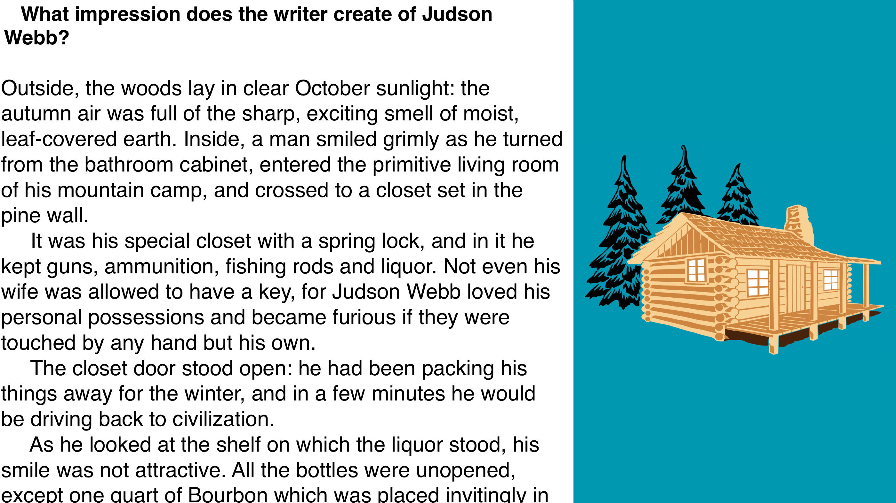
작가는 저드슨 웹(Judson Webb)에 대해 어떤 인상(impression)을 만들어 내는가?
바깥에는 맑은 10월 햇빛 속에 숲이 펼쳐져 있었다. 가을 공기는 축축한, 낙엽 덮인 흙의 날카롭고 자극적인 냄새로 가득했다. 안에서는 한 남자가 음산하게 웃으며(smiled grimly) 욕실 수납장에서 돌아서서, 산속 오두막의 소박한 거실로 들어와, 소나무 벽에 짜 넣은 벽장(closet)으로 걸어갔다.
그것은 용수철 자물쇠(spring lock)가 달린 그만의 특별한 벽장이었고, 그 안에 그는 총, 탄약, 낚싯대, 그리고 술을 넣어 두었다. 아내조차 열쇠를 가질 수 없었는데, 저드슨 웹은 자기 소유물(personal possessions)을 애지중지해서 자기 손이 아닌 다른 손이 그것을 건드리면 몹시 화를 냈기(became furious) 때문이다.
벽장 문은 열려 있었다. 그는 겨울을 앞두고 물건들을 챙겨 넣는 중이었고, 몇 분 뒤면 차를 몰아 문명 세계로 돌아갈 참이었다.
술이 놓인 선반을 바라볼 때, 그의 미소는 보기 좋은 것이 아니었다. 병은 모두 뜯지 않은 채였는데, 딱 한 병 버번(Bourbon) 1쿼트만은 예외로, 그것은 사람을 꾀듯(invitingly) 놓여 있었다
'grimly'는 즐거워서 웃는 게 아니라 냉혹하고 음산하게 웃는 것을 뜻한다. 작가가 인물을 직접 '나쁜 사람'이라 말하지 않고, 자물쇠 달린 벽장·아내에게도 안 주는 열쇠·보기 싫은 미소 같은 세부 묘사로 성격을 드러내는 것을 '보여주기'(showing)라 한다. 'invitingly'(꾀듯이)는 누군가 그 술을 마시게 하려는 함정을 암시한다.
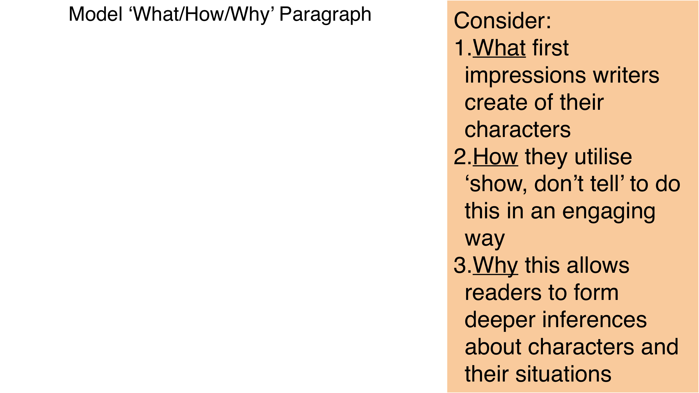
'무엇/어떻게/왜(What/How/Why)' 문단 예시(Model Paragraph)
생각해 볼 점(Consider):
1. 작가들이 자기 등장인물(characters)에 대해 만들어 내는 첫인상(first impressions)이 무엇(What)인지
2. 그들이 이것을 흥미롭게(engaging) 해내기 위해 '말하지 말고 보여줘라(show, don't tell)'를 어떻게(How) 활용하는지
3. 이것이 독자로 하여금 등장인물과 그들의 상황에 대해 더 깊은 추론(inferences)을 하게 해 주는 이유가 왜(Why)인지
'말하지 말고 보여줘라(show, don't tell)'는 인물의 성격을 직접 설명하지 않고 행동·말투·묘사로 드러내는 서술 기법이다. 추론(inference)은 글에 직접 적혀 있지 않은 것을 단서로 읽어 내는 것을 뜻한다.
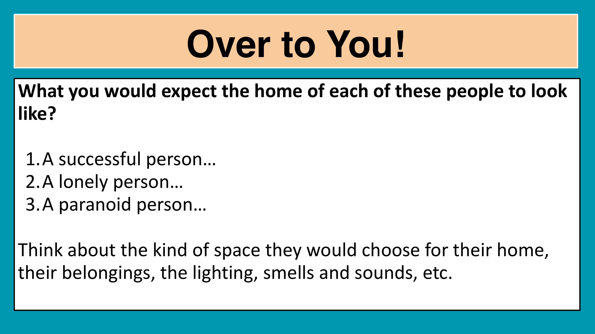
이제 여러분 차례!(Over to You!)
이 사람들 각각의 집(home)은 어떤 모습일 것 같은가?
1. 성공한 사람(a successful person)…
2. 외로운 사람(a lonely person)…
3. 피해망상이 있는 사람(a paranoid person)…
그들이 집으로 고를 법한 공간(space)의 종류, 그들의 소지품(belongings), 조명(lighting), 냄새(smells)와 소리(sounds) 등을 생각해 보라.
paranoid는 남이 자기를 해치거나 감시한다고 지나치게 의심하는 상태를 뜻한다. 이 활동은 인물의 성격을 직접 설명하지 않고 배경·사물 묘사로 드러내는 '말하지 말고 보여주기(show, don't tell)' 기법을 연습하는 것이다.
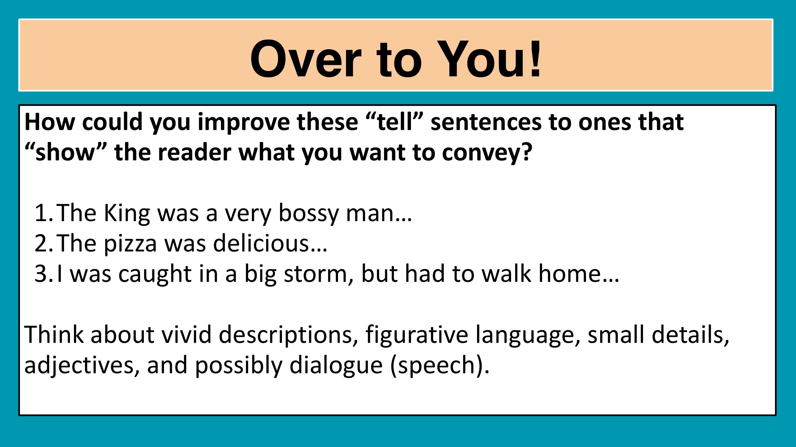
이제 너희 차례다!(Over to You!)
이 '말해주는(tell)' 문장들을, 전하고 싶은 것을 독자에게 '보여주는(show)' 문장으로 어떻게 고칠 수 있을까?
1. 그 왕은 아주 위세를 부리는(bossy) 사람이었다…
2. 그 피자는 맛있었다(delicious)…
3. 나는 큰 폭풍(storm)을 만났지만, 집까지 걸어가야 했다…
생생한 묘사(vivid descriptions), 비유적 언어(figurative language), 작은 세부 묘사(small details), 형용사(adjectives), 그리고 가능하다면 대화(dialogue, speech)를 생각해 보아라.
'보여주기, 말하지 말고(show, don't tell)'는 감정이나 성질을 단어로 단정해 말하는 대신 행동·감각·장면으로 드러내는 글쓰기 기법이다. 예를 들어 '그 왕은 위세를 부렸다'라고 말하는 대신, 왕이 손가락을 튕겨 신하들을 불러세우고 명령을 쏟아내는 장면을 쓰는 식이다. 비유적 언어(figurative language)는 직유(simile)·은유(metaphor)처럼 빗대어 표현하는 말을 뜻한다.
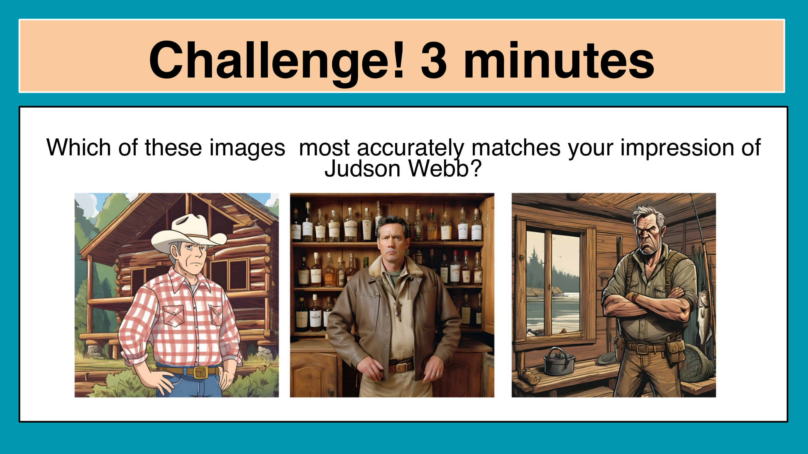
도전! 3분 (Challenge! 3 minutes)
다음 그림들 중 어느 것이 저드슨 웹(Judson Webb)에 대한 여러분의 인상(impression)과 가장 정확하게 들어맞는가?
[그림 1] 통나무집 앞에 흰 카우보이모자를 쓰고 붉은 체크무늬 셔츠를 입은 채 한 손을 허리에 얹고 서 있는 나이 든 남자
[그림 2] 술병이 가득한 선반 앞에 갈색 가죽 재킷을 입고 굳은 표정으로 서 있는 남자
[그림 3] 호숫가 오두막 안에서 팔짱을 끼고 인상을 쓰고 있는, 낚싯대와 물고기가 걸린 벽 앞의 남자
impression은 어떤 인물에 대해 글을 읽고 머릿속에 그려진 '인상·느낌'을 뜻한다. 작가가 직접 설명하지 않고 말투·행동·배경 묘사로 인물을 그려내는 것을 간접적 인물 제시(indirect characterization)라 하며, 이 활동은 본문 단서에서 얻은 인상을 시각 이미지와 견주어 보는 연습이다.
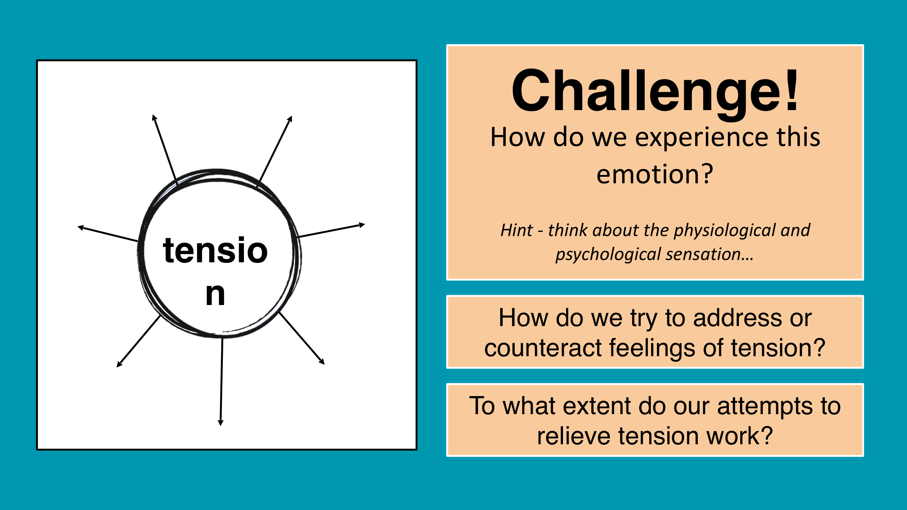
tension(긴장)
Challenge!(도전 과제!)
우리는 이 감정을 어떻게 경험(experience)하는가?
힌트 — 생리적(physiological) 감각과 심리적(psychological) 감각을 생각해 보라…
우리는 긴장(tension)의 느낌을 어떻게 다루거나 상쇄(address or counteract)하려 하는가?
긴장을 해소(relieve)하려는 우리의 시도는 어느 정도까지(to what extent) 효과가 있는가?
tension(긴장)은 이야기에서 독자가 다음에 무슨 일이 일어날지 몰라 조마조마해지는 상태를 말한다. physiological(생리적)은 심장이 빨리 뛰고 손에 땀이 나는 등 몸에 나타나는 반응이고, psychological(심리적)은 불안·초조 같은 마음의 반응이다.
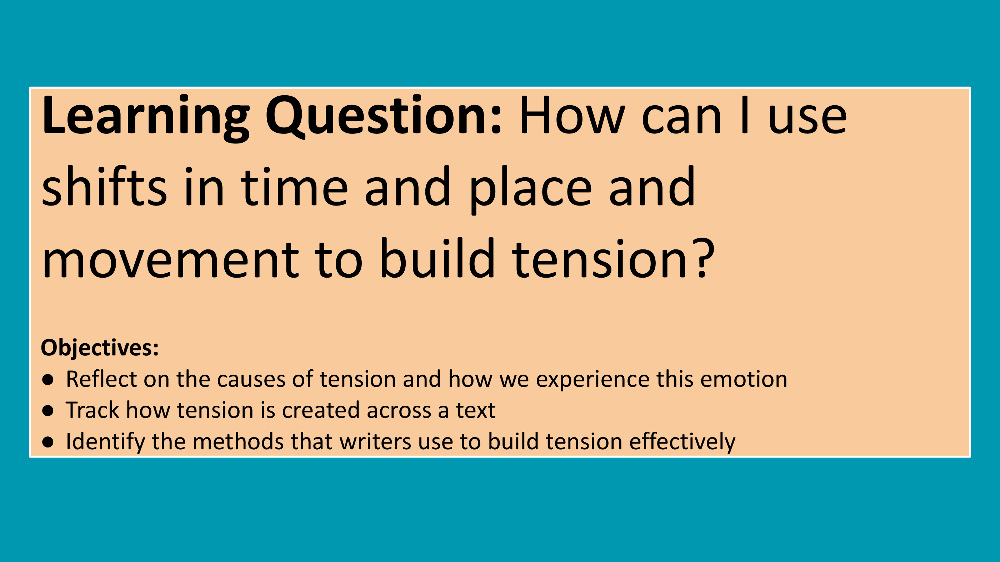
학습 질문(Learning Question): 시간과 장소의 전환, 그리고 움직임을 어떻게 써서 긴장감(tension)을 쌓을 수 있을까?
학습 목표(Objectives):
● 긴장감의 원인과 우리가 이 감정을 어떻게 겪는지 되돌아보기
● 글 전체에 걸쳐 긴장감이 어떻게 만들어지는지 따라가 보기
● 작가들이 긴장감을 효과적으로 쌓기 위해 쓰는 기법(methods) 찾아내기
tension은 독자가 다음에 무슨 일이 벌어질지 조마조마해하는 긴장감을 뜻한다. shifts in time and place(시간·장소의 전환)는 장면을 갑자기 다른 때나 다른 곳으로 옮겨 긴장을 높이는 방법이고, movement(움직임)는 인물의 행동 속도를 조절해 같은 효과를 내는 방법이다.
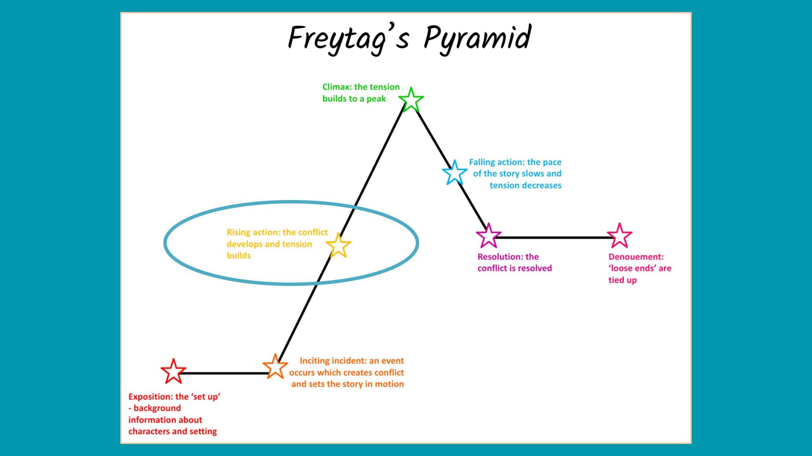
프라이타크의 피라미드(Freytag's Pyramid)
절정(Climax): 긴장이 최고조에 이른다
하강 행동(Falling action): 이야기의 속도가 느려지고 긴장이 줄어든다
상승 행동(Rising action): 갈등이 전개되고 긴장이 쌓인다
해결(Resolution): 갈등이 풀린다
대단원(Denouement): '남은 실마리(loose ends)'가 마무리된다
발단 사건(Inciting incident): 갈등을 만들어 내고 이야기를 움직이게 하는 사건이 일어난다
발단·설명(Exposition): '판 깔기(set up)' — 인물과 배경에 대한 배경 정보
독일 소설가 구스타프 프라이타크가 정리한 이야기 구조 모형이다. 이야기를 긴장의 높낮이로 그려 발단(exposition) → 발단 사건(inciting incident) → 상승 행동(rising action) → 절정(climax) → 하강 행동(falling action) → 해결(resolution) → 대단원(denouement)의 일곱 단계로 나눈다. 해결(resolution)은 갈등 자체가 끝나는 지점이고, 대단원(denouement)은 그 뒤에 남은 이야깃거리를 정리하는 마무리 부분이라는 점이 다르다.
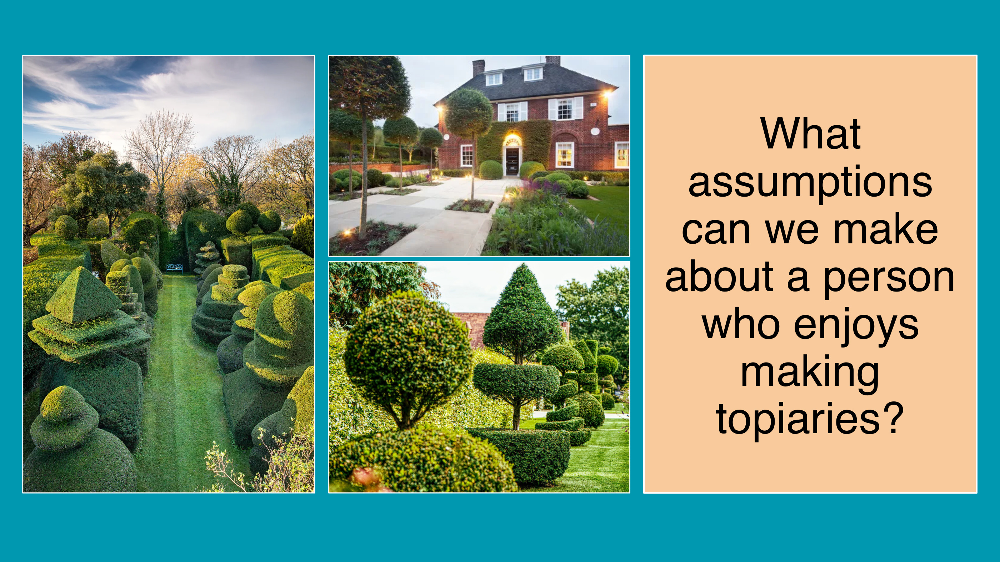
토피어리(topiary)를 만들기 좋아하는 사람에 대해 우리는 어떤 추측(assumptions)을 할 수 있을까?
토피어리(topiary)는 나무나 관목을 원뿔·공·나선 같은 모양으로 다듬어 기르는 정원 기술이다. 어섬션(assumption)은 근거를 다 알지 못한 채 사실이라고 여기는 가정·짐작을 뜻하며, 인물을 묘사할 때 취미·습관 같은 세부로 독자가 성격을 짐작하게 만드는 기법과 연결된다.
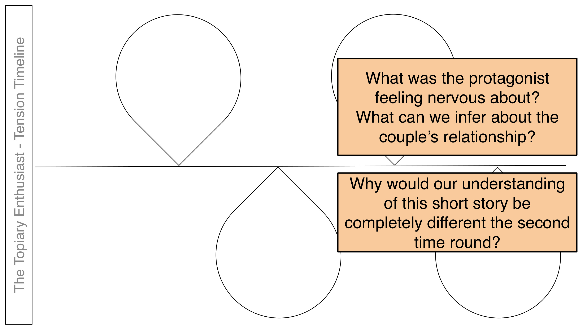
토피어리 애호가(The Topiary Enthusiast) - 긴장 흐름표(Tension Timeline)
주인공(protagonist)은 무엇에 대해 초조함을 느끼고 있었는가?
우리는 그 부부의 관계에 대해 무엇을 추론(infer)할 수 있는가?
왜 이 단편 소설(short story)에 대한 우리의 이해가 두 번째로 읽을 때는 완전히 달라지는가?
긴장 흐름표(tension timeline)는 이야기가 진행되면서 긴장이 올라가고 내려가는 것을 가로선 위(고조)·아래(이완) 곡선으로 그린 그림이다. 추론(infer)은 글에 직접 적혀 있지 않은 것을 단서로 미루어 짐작하는 것을 말한다.
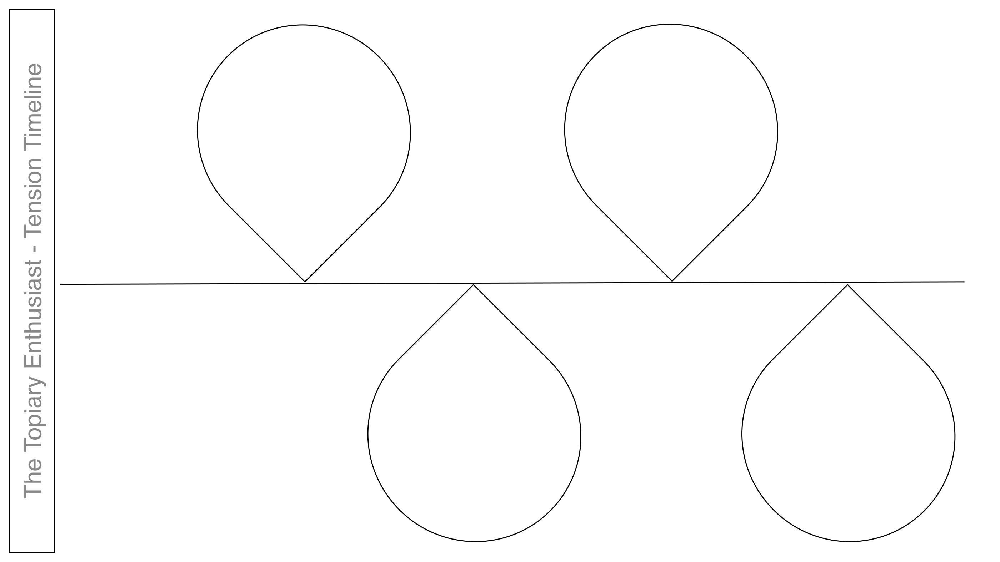
토피어리 애호가(The Topiary Enthusiast) - 긴장 흐름표(Tension Timeline)
긴장 흐름표(tension timeline)는 이야기가 흘러가는 동안 긴장이 오르내리는 모양을 가로선 위아래의 물방울 모양으로 표시하는 도구다. 선 위쪽은 긴장이 높아지는 장면, 아래쪽은 긴장이 풀리는 장면을 뜻한다. 토피어리(topiary)는 나무를 동물이나 도형 모양으로 다듬은 정원 장식을 말한다.
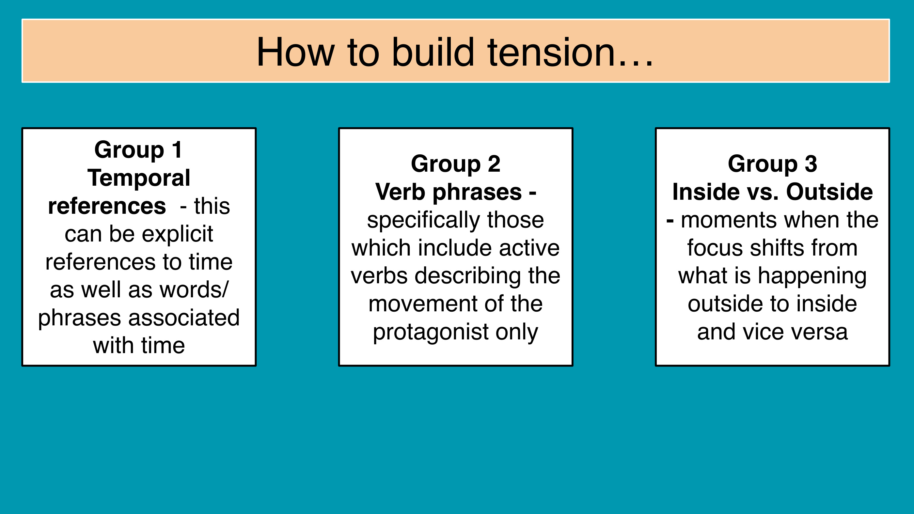
긴장감을 쌓는 방법(How to build tension)…
1조(Group 1)
시간 표현(temporal references) - 시간을 직접 가리키는 표현일 수도 있고, 시간과 연관된 낱말이나 구(words/phrases associated with time)일 수도 있다
2조(Group 2)
동사구(verb phrases) - 그중에서도 주인공(protagonist)의 움직임만을 묘사하는 능동 동사(active verbs)가 들어간 것
3조(Group 3)
안 대 밖(Inside vs. Outside) - 초점이 바깥에서 일어나는 일에서 안쪽으로, 또 그 반대로(vice versa) 옮겨 가는 순간
긴장감(tension)은 독자가 다음을 궁금해하며 조마조마하게 만드는 힘이다. 세 가지 장치는 각각 시간을 재촉하고(시간 표현), 인물의 행동에 시선을 붙들고(주인공만의 능동 동사), 시점을 안팎으로 옮겨 불안을 키운다. vice versa는 '반대로 또한 그러하다'는 뜻의 라틴어 표현이다.
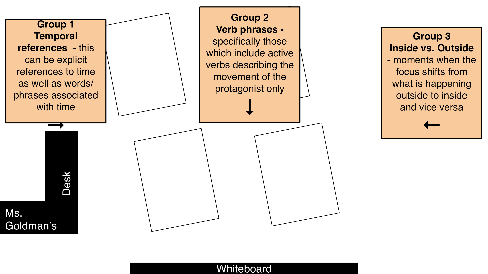
그룹 1(Group 1)
시간 표현(Temporal references) — 시간에 대한 명시적인 언급뿐 아니라 시간과 관련된 낱말·구절도 해당한다
그룹 2(Group 2)
동사구(Verb phrases) — 그중에서도 주인공(protagonist)의 움직임을 묘사하는 능동 동사(active verbs)가 들어간 것만
그룹 3(Group 3)
안 vs. 밖(Inside vs. Outside) — 초점이 바깥에서 일어나는 일에서 안으로, 또 그 반대로 옮겨 가는 순간들
골드만 선생님(Ms. Goldman's) 책상(Desk)
화이트보드(Whiteboard)
교실 자리 배치도로, 세 모둠이 이야기를 분석할 항목을 나눠 맡는다. temporal reference는 'that night', 'after a while'처럼 시간을 가리키는 말이고, active verb는 주인공이 직접 하는 동작을 나타내는 동사다. vice versa는 '반대의 경우도 마찬가지'라는 뜻이다.
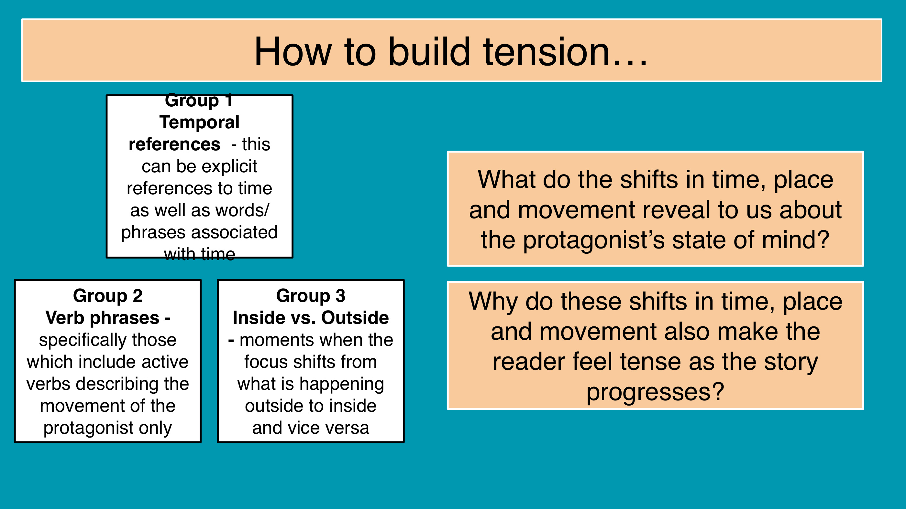
긴장감(tension)을 쌓는 방법…
모둠 1(Group 1)
시간 표현(Temporal references) - 이것은 시간을 직접 가리키는 표현일 수도 있고, 시간과 관련된 낱말이나 어구일 수도 있다
모둠 2(Group 2)
동사구(Verb phrases) - 특히 주인공(protagonist)의 움직임만을 묘사하는 능동 동사(active verbs)가 들어간 것들
모둠 3(Group 3)
안 대 밖(Inside vs. Outside) - 초점이 밖에서 일어나는 일에서 안으로, 또 그 반대로 옮겨 가는 순간들
시간·장소·움직임의 전환(shifts)은 우리에게 주인공의 심리 상태(state of mind)에 대해 무엇을 드러내 주는가?
왜 이러한 시간·장소·움직임의 전환이 이야기가 진행될수록 독자를 긴장하게(tense) 만들기도 하는가?
protagonist는 이야기의 주인공을 뜻하고, temporal references는 '그날 밤', '한 시간 뒤'처럼 시간을 가리키는 표현이다. 세 가지 장치(시간 표현·동사구·안팎의 초점 이동)가 모두 장면을 빠르게 옮겨 놓아 독자가 다음을 예측하지 못하게 만들고, 그것이 긴장감으로 이어진다.
'무엇/어떻게/왜(What/How/Why)' 문단 모범 예시
잰 루크(Jan Rooke)는 『토피어리 애호가(The Topiary Enthusiast)』에서 어떻게 긴장감(tension)을 쌓아 올리는가?
잰 루크는 …하는 인물을 그려 냄으로써 긴장감을 쌓아 올린다.
1. 그 인물에 대한 여러분의 인상은 무엇(What)이며, 그 인물은 어떤 감정을 느끼고 있는가? 잰 루크가 주인공(protagonist)의 심리 상태에 대해 전하려는 메시지는 무엇(What)인가?
1. 잰 루크는 이 메시지를 여러분에게 어떻게(How) 전달하는가? 자신의 의미를 제시하기 위해 여러 기법(methods)을 어떻게(How) 활용하는가?
1. 잰 루크는 왜(Why) 자신의 의미를 이런 방식으로 전달하는가? 이것이 왜(Why) 그 인물과 그 인물이 처한 상황에 대한 여러분의 이해를 깊게 하는가? 이것이 왜(Why) 그 글을 읽기에 흥미롭게 만드는가?
'무엇/어떻게/왜(What/How/Why)'는 문학 분석 문단을 쓰는 틀이다. 무엇(What)=작가가 전하는 내용, 어떻게(How)=그것을 전달하는 기법(methods), 왜(Why)=그 기법이 독자에게 주는 효과를 순서대로 쓴다. 주인공(protagonist)은 이야기의 중심 인물, 긴장감(tension)은 독자가 느끼는 조마조마한 불안감을 뜻한다.
도전 과제(Challenge!)
내가 지금 들려줄 음악(music)을 아주 주의 깊게 들어라(listen very carefully)…
그 음악은 어떤 감정(feelings)을 불러일으키는가(evoke)?
evoke는 감정·기억·이미지를 마음속에 불러일으킨다는 뜻이다. 이야기의 기술 수업에서는 음악이 분위기(mood)를 만들 듯, 글도 낱말 선택으로 독자의 감정을 불러일으킨다는 점을 연습한다.
학습 질문(Learning Question): 절정 사건(climatic event) 동안 속도감(pace)을 만들어 내기 위해 나는 어떤 방법들을 쓸 수 있는가?
목표(Objectives):
● 서로 다른 장르(genres) 사이에서 절정 순간(climatic moments)들의 공통점(similarities)을 탐구한다
● 작가들이 절정 사건 동안 속도감(pace)을 쌓아 올리기 위해 쓰는 방법들을 찾아낸다
● 이 방법들을 내 글에서 설득력 있게(convincing) 사용한다
pace는 이야기가 흘러가는 속도감을 뜻하며, 짧은 문장·짧은 단락·강한 동사 등으로 빠르게 만들 수 있다. climatic event는 이야기가 가장 긴장이 높아지는 절정 장면을 가리킨다.
프라이타크의 피라미드(Freytag's Pyramid)
절정(Climax): 긴장이 최고조에 이른다
하강 행동(Falling action): 이야기의 속도가 느려지고 긴장이 줄어든다
상승 행동(Rising action): 갈등이 전개되고 긴장이 쌓인다
해결(Resolution): 갈등이 해결된다
대단원(Denouement): '남은 실마리(loose ends)'가 마무리된다
발단 사건(Inciting incident): 갈등을 만들어 이야기를 움직이게 하는 사건이 일어난다
발단·도입(Exposition): '설정(set up)' — 인물과 배경에 대한 배경 정보
프라이타크의 피라미드는 이야기 구조를 다섯~일곱 단계로 나눈 도식이다. 왼쪽 아래 도입(exposition)에서 시작해 발단 사건(inciting incident)으로 올라가기 시작하고, 상승 행동(rising action)을 거쳐 꼭대기의 절정(climax)에 이른 뒤, 하강 행동(falling action)으로 내려와 해결(resolution)과 대단원(denouement)으로 끝난다. denouement는 프랑스어에서 온 말로 '매듭을 푼다'는 뜻이며, 절정 이후 남은 궁금증을 정리하는 부분이다.
스릴러/미스터리(Thriller/Mystery)
디스토피아(Dystopia)
판타지(Fantasy)
호러(Horror)
책상(Desk)
골드먼 선생님의(Ms. Goldman's)
화이트보드(Whiteboard)
교실 자리 배치도로, 네 개의 모둠 책상이 각각 하나의 장르(genre)를 맡는다는 뜻이다. 디스토피아(dystopia)는 겉으로는 질서 잡힌 듯하지만 실제로는 억압적인 미래 사회를 그린 장르이고, 스릴러/미스터리는 긴장과 수수께끼 풀이가 중심이 되는 장르다.
위험을 그려내기(Depicting Danger)…
우리가 위험(danger)에 처했을 때 우리의 사고(thinking)에는 무슨 일이 일어나는가?
우리가 위험에 처했을 때 우리가 주변 환경(surroundings)에 반응하고 대응하는(react and respond) 방식에는 무슨 일이 일어나는가?
작가는 이것을 글로 어떻게 전달(convey)할 수 있겠는가?
위험 상황에서 사람의 사고는 좁아지고 감각은 예민해진다는 점을 짧은 문장·감각 묘사로 옮기는 것이 이 수업의 핵심이다. convey는 '(생각·느낌을) 전달하다', surroundings는 '주변 환경', react and respond는 '즉각 반응하다/대응하다'는 뜻이다.
모범 예시(Model Example)
그녀는 한 걸음 내디뎠다. 메아리가 울렸다. 그녀는 또 한 걸음 내디뎠다.
또 메아리. 또 한 걸음, 아주 짧은 순간 뒤에.
"누군가 날 따라오고 있어." 그녀는 협곡(ravine)을 향해, 검은 귀뚜라미(crickets)들과 짙은 초록빛으로 숨은 개구리들과 검은 개울을 향해 속삭였다. "누군가 내 뒤 계단에 있어. 난 감히 뒤돌아보지 못하겠어."
또 한 걸음, 또 하나의 메아리.
"내가 한 걸음 내디딜 때마다, 그들도 한 걸음 내디뎌." 한 걸음 그리고 하나의 메아리.
힘없이 그녀는 협곡을 향해 물었다. "케네디 경관님(Officer Kennedy), 당신인가요?"
귀뚜라미들은 조용했다.
귀뚜라미들은 귀 기울이고 있었다.
이 기법들은 어떻게 글의 속도(pace)를 빠르게 하는가?
이것이 위험하다는 느낌(sense of danger)을 어떻게 더하는가?
1. 단문과 불완전문(Simple and minor sentences)
2. 반복(Repetition)
3. 감각적 묘사(Sensory description)
단문(simple sentence)은 주어+동사가 하나뿐인 짧은 문장이고, 불완전문(minor sentence)은 "또 메아리."처럼 동사 없이 조각으로 쓴 문장이다. 이런 짧은 문장과 같은 말의 반복(repetition), 소리·색 같은 감각 묘사(sensory description)가 겹치면 읽는 속도가 빨라져 긴장과 공포가 커진다. 이 대목은 레이 브래드버리(Ray Bradbury)의 작품에 나오는 장면이다.
도전 과제(Challenge)!
이 그림들을 프라이타크의 피라미드(Freytag's Pyramid)의 각 단계에 알맞게 연결해 보라.
프라이타크의 피라미드는 이야기의 구조를 다섯 단계로 나눈 것이다 — 발단(exposition), 상승 전개(rising action), 절정(climax), 하강 전개(falling action), 결말(resolution/denouement). 그림들은 각 단계의 비유다: 매듭(knot)은 얽힌 갈등, 성냥불(match)은 사건의 촉발, 미로(maze)는 복잡해지는 전개, 외줄타기(tightrope)는 긴장이 최고조에 이른 절정, 결승선(finish line)은 이야기의 마무리, 머리를 감싸 쥔 모습은 갈등(conflict)과 긴장(tension)을 나타낸다.
학습 질문(Learning Question): 작가들은 어떻게 시간 순서대로 진행되는 서사(chronological narrative)에서 벗어나는가(deviate)?
학습 목표(Objectives):
● 중간에서 시작하기(in medias res), 회상(flashback), 절정에서 끊기(cliffhanger)를 시간 순서 서사에서 벗어나는 방법으로 익힌다
● 이런 대안적 구조(alternative structures)가 문학(Literature)과 영화(Film)에서 어떻게 쓰이는지 탐구한다
chronological narrative는 사건을 일어난 순서 그대로 늘어놓는 이야기 방식이다. in medias res는 이야기 한복판에서 시작하는 기법, flashback은 과거 장면으로 되돌아가는 기법, cliffhanger는 결정적인 순간에 끊어 궁금증을 남기는 기법이다. deviate는 '정해진 길에서 벗어나다'라는 뜻이다.
프라이타크의 피라미드(Freytag's Pyramid)
발단·설명(Exposition): '판 깔기(set up)' — 인물과 배경에 대한 배경 정보
도입 사건(Inciting incident): 갈등을 만들어 이야기를 움직이게 하는 사건이 일어난다
상승 전개(Rising action): 갈등이 발전하고 긴장이 쌓인다
절정(Climax): 긴장이 꼭대기까지 쌓인다
하강 전개(Falling action): 이야기의 속도가 느려지고 긴장이 줄어든다
결말·해결(Resolution): 갈등이 해결된다
대단원(Denouement): '남은 실마리(loose ends)'가 마무리된다
작가는 시간 순서대로의 서사 구조(chronological narrative structure)에서 어떻게 벗어날 수 있을까?
언제·왜 그렇게 하기로 할까?
프라이타크의 피라미드는 이야기를 긴장의 오르내림으로 그린 7단계 구조다. 시간 순서를 벗어나는 대표적 기법으로는 과거로 돌아가는 회상(flashback), 앞일을 미리 암시하는 복선(foreshadowing), 이야기 중간부터 시작하는 인 메디아스 레스(in medias res)가 있다.
이야기하는 방법(Method of storytelling) | 이 서사 구조(narrative structure)의 특징은 무엇인가?
이런 종류의 서사 구조는 시간 순서대로 된 이야기(chronological narrative)에 어떤 작용을 하는가? | 이 서사 구조는 독자가 글을 경험하는 방식에 어떤 영향을 주는가?
이 구조는 왜 작가가 자기 이야기를 흥미롭고 재미있게 전하도록 도와줄 수 있는가? | 어떤 장르(genre)가 이런 종류의 서사 구조에 가장 잘 맞는가? 그 까닭은?
인 메디아스 레스(In medias res) ('일의 한가운데에서' — 'in the middle of things')
회상 장면(Flashback) (과거에 일어난 사건 — an event in the past)
절벽 끝 결말(Cliffhanger) (사건을 설명하지 않은 채 끝내는 결말 — an ending which leaves events unexplained)
세 가지 모두 시간 순서를 흐트러뜨리는 서사 구조다. 인 메디아스 레스(in medias res)는 이야기를 사건 한복판에서 시작해 독자를 단번에 끌어들이고, 회상 장면(flashback)은 과거로 되돌아가 인물의 동기나 숨은 사정을 밝히며, 절벽 끝 결말(cliffhanger)은 궁금증을 남긴 채 끊어 다음을 읽게 만든다.
지구로 귀환(Down to Earth)
착수(Splashdown).
알렉스 라이더(Alex Rider)는 충돌의 순간을 결코 잊지 못할 것이다. 낙하산이 펼쳐질 때의 첫 번째 충격, 그리고 그를 우주에서 데려온 모듈(module)이 바다에 부딪힐 때의 두 번째 — 더 심하게 덜컹거리는 — 충격. 그의 상상이었을까, 아니면 정말로 그의 주위 온 사방에서 김이 피어오르고 있었을까? 어쩌면 그것은 바닷물 물보라(sea spray)였을지도 모른다. 상관없었다. 그는 돌아왔다. 그가 신경 쓰는 것은 그것뿐이었다. 그는 해냈다. 그는 아직 살아 있었다.
그는 등을 대고 누워, 무릎을 가슴에 바짝 당긴 채 작은 캡슐(capsule) 안에 구겨 넣어져 있었다. 눈을 반쯤 감은 채, 알렉스는 비범한 고요함(extraordinary stillness)의 한순간을 경험했다. 그는 미동도 없었다. 주먹은 꽉 쥐어져 있었다. 그는 숨을 쉬지 않고 있었다. 벌써 그는 자신을 우주로 이끈 그 사건들이 정말로 일어났다는 것을 믿기 어려웠다. 그는 자신이 시속 1만 7천 5백 마일로 지구 주위를 돌진하고 있는 모습을 상상해 보려 했다. 그런 일이 일어났을 리 없었다. 그것은 분명 어떤 믿을 수 없는 꿈의 일부였을 것이다.
〈스카이폴(Skyfall)〉의 오프닝과 앤서니 호로비츠(Anthony Horowitz)의 〈스네이크헤드(Snakehead)〉 사이에서 어떤 유사점(similarities)을 찾아낼 수 있는가?
앤서니 호로비츠는 왜 인 메디아스 레스(in medias res) 오프닝으로 그런 사건을 골랐을까? 그것은 독자의 첫 반응(reader's initial reaction)에 어떤 영향을 주는가?
인 메디아스 레스(in medias res)는 '사건의 한복판에서'라는 뜻의 라틴어로, 이야기를 처음부터가 아니라 가장 긴박한 장면 도중에 시작하는 기법이다. 독자는 배경 설명 없이 위기 상황에 던져져 곧바로 긴장감을 느끼고, '어쩌다 이렇게 됐나'가 궁금해져 계속 읽게 된다. 이 대목에서 우주에서 추락해 바다에 착수하는 장면을 첫 장면으로 쓴 것이 바로 그 예다.
이번 학기 지금까지 함께 읽은 이야기들 가운데, 어떤 것이 절벽 끝 결말(cliffhanger ending)을 가지고 있는가? 우리는 그것을 어떻게 아는가?
그리고 상자 깊숙한 곳에서, 잭은 자기 비밀을 품은 채 기다리며 미소 짓는다. 그는 아이들을 기다리고 있다. 그는 영원히 기다릴 수 있다.
작은 위스키 잔이 저드슨(Judson)의 입술에 눌러 대어졌다. 멍하고 반쯤 의식을 잃은 채 그는 마셨다.
"개인적으로, 저는 그게 바로 여기 이 건물 안에 있다고 생각합니다."
"아마 우리 코앞에 바로 있겠죠. 어떻게 생각해요, 잭?"
그리고 다른 방에서, 메리 말로니(Mary Maloney)는 키득거리기 시작했다.
마이옵(Myop)은 자기 꽃들을 내려놓았다. 그리고 여름은 끝났다.
안개가 걷히고 맑은 별밤 하늘이 그녀의 진입로로 들어서는 경찰차 위로 빛을 비추었다.
그녀 뒤 거실에서, 누군가가 헛기침을 했다.
절벽 끝 결말(cliffhanger ending)은 결말을 맺지 않고 긴장된 순간에 끊어, 다음에 무슨 일이 벌어질지 독자가 상상하게 두는 마무리다. 판별하는 단서는 마지막 문장이 새로운 위협이나 인기척을 '방금 드러내며' 끝나는지다 — 상자 속에서 기다리는 잭, 코앞의 시체를 두고 키득거리는 메리 말로니, 도착하는 경찰차, 뒤에서 나는 헛기침이 모두 그런 예다. 반대로 마이옵이 꽃을 내려놓고 "여름은 끝났다"로 닫히는 문장은 사건이 정리되는 닫힌 결말(resolved ending)에 가깝다.
도전 과제(Challenge!) - 3분
이번 학기에 우리가 함께 읽은 이야기들 중에서 사건 한복판에서 시작하는 도입(in medias res opening)을 가진 것은 어느 것인가? 우리는 그것을 어떻게 알 수 있는가?
그 장난감이 어디서 왔는지 아무도 몰랐다 — 어느 증조부모나 먼 친척 고모가 그것을 갖고 있다가 아이 방(nursery)에 주었는지도.
안개가 짙어지며 졸린 마을 위로 내려앉아, 잠자리에 들 준비를 하는 새들의 시골 소리를 뒤덮었다.
마이옵(Myop)이 닭장에서 돼지우리로, 다시 훈제장으로 가볍게 뛰어다닐 때, 이토록 아름다운 날들은 없었던 것처럼 느껴졌다.
그녀는 한 발짝 내디뎠다. 메아리가 있었다. 그녀는 또 한 발짝 내디뎠다.
방은 따뜻했고, 커튼은 닫혀 있었으며, 탁자 위 두 개의 등이 켜져 있었다.
바깥에는 숲이 맑은 10월 햇빛 속에 펼쳐져 있었다. 가을 공기에는 축축하고 낙엽에 덮인 흙의 알싸하고 설레는 냄새가 가득했다.
인 메디아스 레스(in medias res)는 라틴어로 '사건의 한가운데로'라는 뜻이며, 배경 설명 없이 이미 진행 중인 행동으로 이야기를 시작하는 도입 방식이다. 여기 제시된 여섯 개의 도입부 중 인물이 이미 움직이고 있는 것(발을 내딛거나 뛰어다니는 것)은 사건 한복판 도입이고, 날씨·방·물건을 먼저 묘사하는 것은 배경 묘사 도입(descriptive/setting opening)이다.
학습 질문(Learning Question): 인 메디아스 레스(in medias res) 도입의 장점(advantages)과 함정(pitfalls)은 무엇인가?
목표(Objectives):
● 여러 작가가 어떻게 인 메디아스 레스 도입부(in medias res openings)를 만드는지 탐구한다
● 인 메디아스 레스 도입부의 효과(effectiveness)를 평가한다
● 독자를 사로잡을 나만의 인 메디아스 레스 도입부를 직접 써 본다
인 메디아스 레스(in medias res)는 '사건의 한가운데서'라는 뜻의 라틴어로, 이야기를 처음부터가 아니라 한창 벌어지는 장면에서 시작하는 기법이다. 독자를 단번에 끌어들이는 장점이 있지만, 배경 설명이 없어 혼란을 줄 수 있는 것이 함정(pitfall)이다.
비누 거품, 그리고 그것뿐(Lather and Nothing Else)
우리는 어느 순간에 이 이야기(narrative) 속으로 '들어가는가(enter)'?
이 이야기의 도입부(opening)는 어떤 질문들을 불러일으키는가?
우리의 질문에 대한 답이 언제 그리고 어떻게 밝혀지는지에 대해 우리는 무엇을 알아차리는가?
어떤 질문들이 답해지지 않은 채(unanswered) 남아 있는가? 왜 그런가?
'Lather and Nothing Else'는 콜롬비아 작가 에르난도 테예스(Hernando Téllez)의 단편으로, 이발사가 손님인 군 장교의 목에 면도칼을 대고 있는 장면을 다룬다. 이야기 중간 지점에서 시작하는 기법을 인 메디아스 레스(in medias res)라 하며, 작가가 정보를 일부러 늦게 흘리는 것을 서스펜스(suspense)라고 한다.
그는 들어오면서 인사를 하지 않았다. 나는 가죽 조각에 대고 내 제일 좋은 면도칼(razor)을 갈고 있었다. 그리고 그를 알아본 순간, 나는 떨기 시작했다. 하지만 그는 알아채지 못했다. 그것을 감추려고 나는 계속 칼날을 갈았다. 나는 엄지손가락 끝으로 그것을 시험해 보고, 빛에 비춰 그를 보려고 몸을 돌렸다. 그때 그는 권총집(holster)이 걸려 있는, 총알을 꽂아 두는 벨트를 풀고 있었다. 그는 그것을 옷걸이 못 하나에 걸고, 그 위에 조끼를 얹었다. 그는 나에게 말을 걸려고 몸을 완전히 돌렸고, 넥타이 매듭을 풀면서 나에게 말했다. "지독하게 덥군. 면도 좀 해 주게." 그리고 그는 의자에 앉았다. 나는 그가 나흘쯤 자란 수염을 지녔다고 짐작했다. 우리 편 사람들을 찾아 나선 가장 최근의 원정(excursion) 나흘 동안이었다. 그의 얼굴은 햇볕에 그을려 거칠어 보였다. 나는 정성 들여 비누를 준비하기 시작했다. 비누 덩어리에서 몇 조각을 잘라 그릇에 떨어뜨리고, 따뜻한 물을 조금 섞은 뒤, 솔로 젓기 시작했다. 거품(foam)이 곧 일어나기 시작했다.
"부대(troop)에 있는 녀석들도 나만큼은 수염이 자랐을 거야."
나는 계속 비누거품(lather)을 섞었다.
"그래도 우리는 잘 해냈지, 알겠나? 우두머리들을 잡았어. 몇은 죽은 채로 우리에게 왔고, 몇은 아직 살아 있지. 하지만 곧 다 죽게 될 거야."
"몇 명이나 잡으셨습니까?" 내가 물었다.
"열넷. 그들과 마주치려고 깊숙이 들어가야 했지. 하지만 이제 그 값을 하고 있어. 그중 단 한 명도, 하나도 살려 두지 않을 거야." 그는 비누거품이 넘치도록 묻은 솔을 든 나를 보고 의자에 등을 기댔다. 나는 아직 천(sheet)을 씌우지 않았다. 나는 분명히 당황해 있었다. 나는 장에서 천을 꺼내 손님의 목에 둘러 주었다. 그는 말을 멈추지 않았다. 그는 내가 자기 편 사람 중 하나라고 여겼다. "이 마을은 지난번 일에서 교훈을 얻었을 거야." 그가 말했다.
이 이야기의 화자는 이발사이면서 몰래 반대편(저항 세력)에 속해 있고, 손님으로 앉은 남자는 그 동료들을 잡아 죽인 군인이다. 독자는 알지만 등장인물은 모르는 사실 때문에 생기는 긴장을 극적 아이러니(dramatic irony)라 한다. lather는 비누를 물과 섞어 낸 거품, razor는 면도칼을 뜻한다.
장점(Pros) | 단점(Cons)
(빈칸)
중간에서 시작하기(in medias res)는 어떻게…
• 긴장(tension)과 서스펜스(suspense)를 만들어 내는가?
• 인물의 성장·변화(character development)에 영향을 주는가?
• 독자가 줄거리(plot)에 몰입(engagement)하는 데 어떤 영향을 주는가?
in medias res는 라틴어로 '사건의 한가운데로'라는 뜻이며, 이야기를 처음부터가 아니라 사건이 한창 벌어지는 지점에서 시작하는 기법이다. 표를 채울 때는 왼쪽에 이 기법의 장점, 오른쪽에 단점을 적으면 된다.
100단어 도전(100 Word Challenge)!
붐비는 카페에서 벌어지는 팽팽한 말다툼.
낯선 장소에서 깨어났는데 어떻게 거기 왔는지 전혀 기억나지 않는 인물.
결과가 아직 정해지지 않은 스포츠 경기나 대회의 결정적 순간.
휴대폰에서 뜻밖의 메시지를 발견하는 인물.
목록에 있는 상황(scenario) 중 하나를 골라 자기만의 사건 한가운데서 시작하기(in medias res) 도입부의 출발점으로 삼아라.
최근에 배운 in medias res의 장점과 단점(pros and cons)에 대한 지식을 활용해, 독자를 사로잡을(hook the reader) 도입 단락(opening passage)을 써라.
어떤 정보를 알려주고, 어떤 정보를 감출(withhold) 것이며, 그 이유는 무엇인지 신중하게 생각하라.
in medias res는 라틴어로 '사건의 한가운데로'라는 뜻이며, 이야기를 처음부터가 아니라 한창 진행 중인 장면에서 시작하는 기법이다. withhold는 '(정보를) 주지 않고 감추다'라는 뜻으로, 감춘 정보가 독자의 궁금증을 만들어 hook(독자를 낚아채는 장치) 역할을 한다.